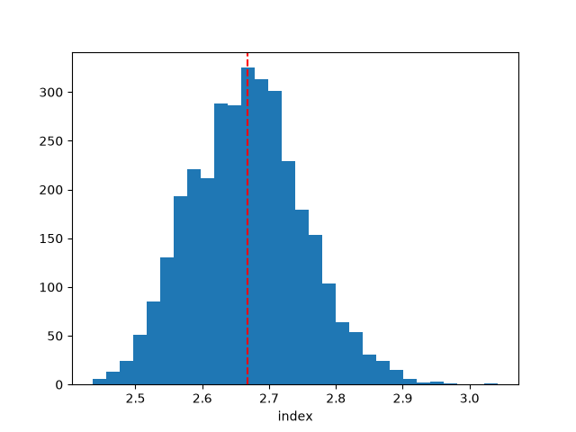
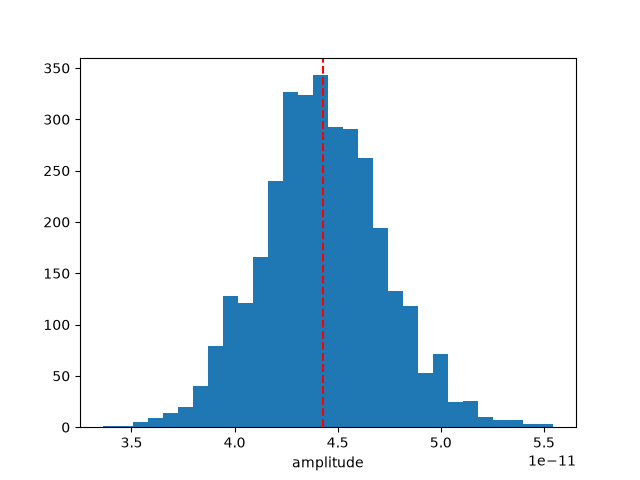
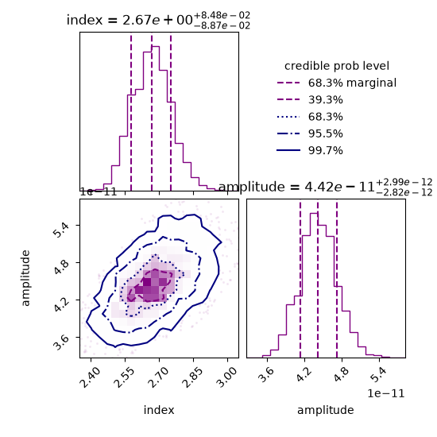
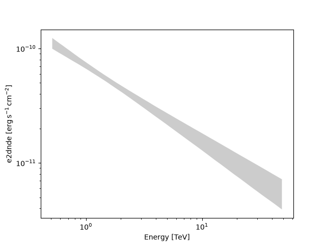
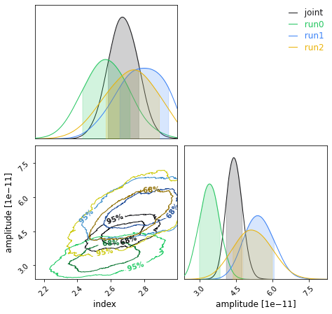
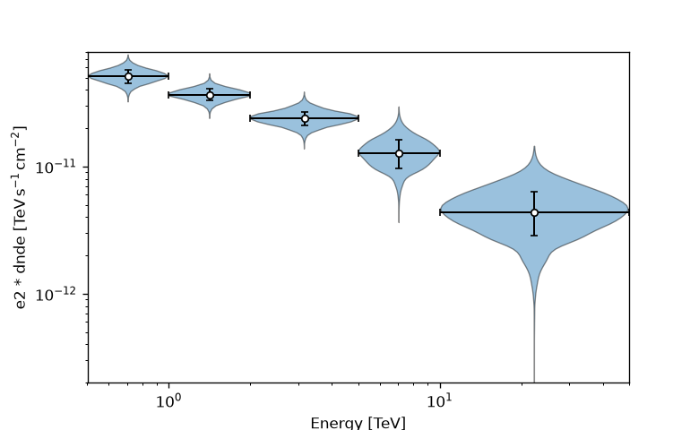

Note
Go to the end to download the full example code or to run this example in your browser via Binder.
Bayesian analysis with nested sampling#
A demonstration of a Bayesian analysis using the nested sampling technique.
Context#
1. Bayesian analysis#
Bayesian inference uses prior knowledge, in the form of a prior distribution, in order to estimate posterior probabilities which we traditionally visualise in the form of corner plots. These distributions contain more information than a maximum likelihood fit as they reveal not only the “best model” but provide a more accurate representation of errors and correlation between parameters. In particular, non-Gaussian degeneracies are complex to estimate with a maximum likelihood approach.
2. Limitations of the Markov Chain Monte Carlo approach#
A well-known approach to estimate this posterior distribution is the Markov Chain Monte Carlo (MCMC). This uses an ensemble of walkers to produce a chain of samples that after a convergence period will reach a stationary state. Once convergence is reached, the successive elements of the chain are samples of the target posterior distribution. However, the weakness of the MCMC approach lies in the “Once convergence” part. If the walkers are started far from the best likelihood region, the convergence time can be long or never reached if the walkers fall in a local minima. The choice of the initialisation point can become critical for complex models with a high number of dimensions and the ability of these walkers to escape a local minimum or to accurately describe a complex likelihood space is not guaranteed.
3. Nested sampling approach#
To overcome these issues, the nested sampling (NS) algorithm has gained traction in physics and astronomy. It is a Monte Carlo algorithm for computing an integral of the likelihood function over the prior model parameter space introduced in Skilling, 2004. The method performs this integral by evolving a collection of points through the parameter space (see recent reviews from Ashton et al., 2022, and Buchner, 2023). Without going into too many details, one important specificity of the NS method is that it starts from the entire parameter space and evolves a collection of live points to map all minima (including multiple modes if any), whereas Markov Chain Monte Carlo methods require an initialisation point and the walkers will explore the local likelihood. The ability of these walkers to escape a local minimum or to accurately describe a complex likelihood space is not guaranteed. This is a fundamental difference with MCMC or Minuit which will only ever probe the vicinity along their minimisation paths and do not have an overview of the global likelihood landscape. The analysis using the NS framework is more CPU time consuming than a standard classical fit, but it provides the full posterior distribution for all parameters, which is out of reach with traditional fitting techniques (N*(N-1)/2 contour plots to generate). In addition, it is more robust to the choice of initialisation, requires less human intervention and is therefore readily integrated in pipeline analysis. In Gammapy, we provide several NS backends: UltraNest and Nautilus. UltraNest is a package that implements the NS algorithm and is used in many astrophysical applications. Nautilus is a more recent implementation of the NS algorithm that exploits neural networks to learn a likelihood function emulator to propose new live points. It is designed to be faster and more efficient than UltraNest, especially for high-dimensional problems. For a nice visualisation of the NS method see here: sampling visualisation. And for a tutorial of UltraNest applied to X-ray fitting with concrete examples and questions see: BXA Tutorial.
See the UltraNest docs here). Note: please cite UltraNest if used for a paper If you are using the “UltraNest” library for a paper, please follow its citation scheme: Cite UltraNest.
See the Nautilus docs here). Note: please cite Nautilus if used for a paper If you are using the “Nautilus” library for a paper, please follow its citation scheme: Cite Nautilus.
Proposed approach#
In this example, we will perform a Bayesian analysis with multiple 1D spectra of the Crab nebula data and investigate their posterior distributions.
Setup#
As usual, we’ll start with some setup …
import matplotlib.pyplot as plt
import numpy as np
import astropy.units as u
from gammapy.datasets import Datasets
from gammapy.datasets import SpectrumDatasetOnOff
from gammapy.modeling.models import (
SkyModel,
UniformPrior,
LogUniformPrior,
)
from gammapy.modeling.sampler import Sampler
from gammapy.estimators import FluxCollectionEstimator
from gammapy.visualization import plot_samples_violin_vs_energy
Loading the spectral datasets#
Here we will load a few Crab 1D spectral data for which we will do a fit.
Model definition#
Now we want to define the spectral model that will be fitted to the data. The Crab spectra will be fitted here with a simple powerlaw for simplicity.
model = SkyModel.create(spectral_model="pl", name="crab")
Warning
Priors definition: Unlike a traditional fit where priors on the parameters are optional, here it is inherent to the Bayesian approach and are therefore mandatory.
In this case we will set (min,max) prior that will define the
boundaries in which the sampling will be performed.
Note that it is usually recommended to use a LogUniformPrior for
the parameters that have a large amplitude range like the
amplitude parameter.
A UniformPrior means that the samples will be drawn with uniform
probability between the (min,max) values in the linear or log space
in the case of a LogUniformPrior.
model.spectral_model.amplitude.prior = LogUniformPrior(min=1e-12, max=1e-10)
model.spectral_model.index.prior = UniformPrior(min=1, max=5)
datasets.models = [model]
print(datasets.models)
DatasetModels
Component 0: SkyModel
Name : crab
Datasets names : None
Spectral model type : PowerLawSpectralModel
Spatial model type :
Temporal model type :
Parameters:
index : 2.000 +/- 0.00
amplitude : 1.00e-12 +/- 0.0e+00 1 / (TeV s cm2)
reference (frozen): 1.000 TeV
Defining the sampler and options#
As for the Fit object, the Sampler object can receive
different backends.
The Sampler comes with “reasonable” default parameters, but you can
change them via the options dictionary, using the backend’s own option names.
Gammapy passes each option to the backend sampler constructor or to its run method.
Here is a short description of the most relevant UltraNest options that you
could change:
min_num_live_points: minimum number of live points throughout the run. More points allow to discover multiple peaks if existing, but is slower. To test the Prior boundaries and for debugging, a lower number (~100) can be used before a production run with more points (~400 or more).frac_remain: the cut-off condition for the integration, set by the maximum allowed fraction of posterior mass left in the live points vs the dead points. High values (e.g., 0.5) are faster and can be used if the posterior distribution is a relatively simple shape. A low value (1e-1, 1e-2) is optimal for finding peaks, but slower.log_dir: directory where the output files will be stored. If set to None, no files will be written. If set to a string, a directory will be created containing the ongoing status of the run and final results. For time consuming analysis, it is highly recommended to use that option to monitor the run and restart it in case of a crash (withresume=True).
More information about the UltraNest options can be found in the UltraNest docs.
More information about the Nautilus options can be found in the Nautilus docs.
A few useful options for Nautilus are:
n_live: number of live points. Equivalent ofmin_num_live_pointsin UltraNest. Due to a different methodology the recommended number of live points should be higher than in UltraNest (1000-3000) while still being faster in high-dimensional problems.f_live: fraction of the evidence from live points to use for convergence. Equivalent offrac_remainin UltraNest.pool: Pool used for parallelization of likelihood calls and sampler calculations.filepath: file path with .hdf5 extension (not directory path) where the output files will be stored.
Backend comparison: For a comparison between the two backends methods, see here. For a gamma-ray analysis, current testing shows that UltraNest can be faster (or equivalent) than Nautilus for low-dimensional problems (1-5 parameters) and Nautilus is faster for high-dimensional problems (>10 parameters) but this of course case specific. If your analysis is dominated by likelihood evaluation time, the parallelisation of the likelihood evaluation in Nautilus (using multiprocessing, just setting pool=nCPUs in the sampler options) has a simpler setup than UltraNest (MPI) and can be more efficient on laptops. Notably, multiprocessing with Nautilus can work in a Jupyter notebook while MPI with UltraNest is not supported in a notebook.
Important note: unlike the MCMC method, you don’t need to define the number of steps for which the sampler will run. The algorithm will automatically stop once a convergence criteria has been reached.
Next we can run the sampler on a given dataset. No options are accepted in the run method.
[ultranest] Sampling 400 live points from prior ...
Mono-modal Volume: ~exp(-4.47) * Expected Volume: exp(0.00) Quality: ok
index : +1.0|************************************************| +5.0
amplitude: +1.0e-12|**************************************** *******| +1.0e-10
Z=-inf(0.00%) | Like=-2275.13..-62.92 [-2275.1332..-333.2407] | it/evals=0/401 eff=0.0000% N=400
Z=-811.8(0.00%) | Like=-786.16..-59.01 [-2275.1332..-333.2407] | it/evals=18/420 eff=90.0000% N=400
Z=-549.0(0.00%) | Like=-542.15..-59.01 [-2275.1332..-333.2407] | it/evals=37/439 eff=94.8718% N=400
Z=-546.1(0.00%) | Like=-540.42..-59.01 [-2275.1332..-333.2407] | it/evals=40/442 eff=95.2381% N=400
Z=-534.5(0.00%) | Like=-529.32..-59.01 [-2275.1332..-333.2407] | it/evals=56/462 eff=90.3226% N=400
Z=-521.3(0.00%) | Like=-516.29..-59.01 [-2275.1332..-333.2407] | it/evals=74/481 eff=91.3580% N=400
Z=-515.1(0.00%) | Like=-508.83..-59.01 [-2275.1332..-333.2407] | it/evals=80/487 eff=91.9540% N=400
Mono-modal Volume: ~exp(-4.49) * Expected Volume: exp(-0.23) Quality: ok
index : +1.0|************************************************| +5.0
amplitude: +1.0e-12|**************************************** *******| +1.0e-10
Z=-505.7(0.00%) | Like=-495.41..-59.01 [-2275.1332..-333.2407] | it/evals=90/499 eff=90.9091% N=400
Z=-481.6(0.00%) | Like=-475.57..-59.01 [-2275.1332..-333.2407] | it/evals=109/518 eff=92.3729% N=400
Z=-472.4(0.00%) | Like=-467.09..-59.01 [-2275.1332..-333.2407] | it/evals=120/535 eff=88.8889% N=400
Z=-459.2(0.00%) | Like=-453.77..-59.01 [-2275.1332..-333.2407] | it/evals=137/555 eff=88.3871% N=400
Z=-448.2(0.00%) | Like=-441.98..-59.01 [-2275.1332..-333.2407] | it/evals=153/574 eff=87.9310% N=400
Z=-445.3(0.00%) | Like=-439.33..-59.01 [-2275.1332..-333.2407] | it/evals=160/581 eff=88.3978% N=400
Z=-431.7(0.00%) | Like=-424.92..-59.01 [-2275.1332..-333.2407] | it/evals=176/601 eff=87.5622% N=400
Mono-modal Volume: ~exp(-4.73) * Expected Volume: exp(-0.45) Quality: ok
index : +1.0|************************************************| +5.0
amplitude: +1.0e-12|************************************************| +1.0e-10
Z=-429.0(0.00%) | Like=-421.35..-59.01 [-2275.1332..-333.2407] | it/evals=180/606 eff=87.3786% N=400
Z=-412.5(0.00%) | Like=-406.75..-59.01 [-2275.1332..-333.2407] | it/evals=199/625 eff=88.4444% N=400
Z=-412.1(0.00%) | Like=-406.12..-59.01 [-2275.1332..-333.2407] | it/evals=200/626 eff=88.4956% N=400
Z=-396.6(0.00%) | Like=-388.37..-59.01 [-2275.1332..-333.2407] | it/evals=219/645 eff=89.3878% N=400
Z=-384.7(0.00%) | Like=-378.06..-59.01 [-2275.1332..-333.2407] | it/evals=234/665 eff=88.3019% N=400
Z=-381.6(0.00%) | Like=-373.71..-59.01 [-2275.1332..-333.2407] | it/evals=240/672 eff=88.2353% N=400
Z=-364.4(0.00%) | Like=-356.61..-59.01 [-2275.1332..-333.2407] | it/evals=256/692 eff=87.6712% N=400
Z=-357.2(0.00%) | Like=-349.91..-59.01 [-2275.1332..-333.2407] | it/evals=269/712 eff=86.2179% N=400
Mono-modal Volume: ~exp(-4.73) Expected Volume: exp(-0.67) Quality: ok
index : +1.0| **********************************************| +5.0
amplitude: +1.0e-12| ***********************************************| +1.0e-10
Z=-349.6(0.00%) | Like=-343.86..-59.01 [-2275.1332..-333.2407] | it/evals=280/725 eff=86.1538% N=400
Z=-334.5(0.00%) | Like=-326.56..-59.01 [-331.8351..-186.0021] | it/evals=296/745 eff=85.7971% N=400
Z=-321.8(0.00%) | Like=-315.81..-59.01 [-331.8351..-186.0021] | it/evals=312/765 eff=85.4795% N=400
Z=-316.1(0.00%) | Like=-308.45..-59.01 [-331.8351..-186.0021] | it/evals=320/773 eff=85.7909% N=400
Z=-304.0(0.00%) | Like=-297.60..-59.01 [-331.8351..-186.0021] | it/evals=336/792 eff=85.7143% N=400
Z=-289.5(0.00%) | Like=-282.38..-59.01 [-331.8351..-186.0021] | it/evals=350/812 eff=84.9515% N=400
Mono-modal Volume: ~exp(-5.12) * Expected Volume: exp(-0.90) Quality: ok
index : +1.0| ********************************************| +5.0
amplitude: +1.0e-12| **********************************************| +1.0e-10
Z=-281.5(0.00%) | Like=-274.55..-59.01 [-331.8351..-186.0021] | it/evals=360/826 eff=84.5070% N=400
Z=-273.4(0.00%) | Like=-267.39..-59.01 [-331.8351..-186.0021] | it/evals=377/847 eff=84.3400% N=400
Z=-263.4(0.00%) | Like=-256.64..-59.01 [-331.8351..-186.0021] | it/evals=394/866 eff=84.5494% N=400
Z=-259.8(0.00%) | Like=-253.44..-59.01 [-331.8351..-186.0021] | it/evals=400/873 eff=84.5666% N=400
Z=-253.2(0.00%) | Like=-246.73..-59.01 [-331.8351..-186.0021] | it/evals=415/892 eff=84.3496% N=400
Z=-245.1(0.00%) | Like=-238.56..-59.01 [-331.8351..-186.0021] | it/evals=430/912 eff=83.9844% N=400
Z=-240.9(0.00%) | Like=-235.16..-59.01 [-331.8351..-186.0021] | it/evals=440/923 eff=84.1300% N=400
Mono-modal Volume: ~exp(-5.44) * Expected Volume: exp(-1.12) Quality: ok
index : +1.0| ******************************************| +5.0
amplitude: +1.0e-12| *********************************************| +1.0e-10
Z=-236.6(0.00%) | Like=-230.25..-59.01 [-331.8351..-186.0021] | it/evals=450/936 eff=83.9552% N=400
Z=-229.5(0.00%) | Like=-223.22..-59.01 [-331.8351..-186.0021] | it/evals=467/957 eff=83.8420% N=400
Z=-223.7(0.00%) | Like=-217.33..-59.01 [-331.8351..-186.0021] | it/evals=480/972 eff=83.9161% N=400
Z=-217.4(0.00%) | Like=-211.13..-59.01 [-331.8351..-186.0021] | it/evals=495/992 eff=83.6149% N=400
Z=-208.7(0.00%) | Like=-202.17..-59.01 [-331.8351..-186.0021] | it/evals=511/1013 eff=83.3605% N=400
Z=-205.7(0.00%) | Like=-199.51..-59.01 [-331.8351..-186.0021] | it/evals=520/1025 eff=83.2000% N=400
Z=-201.2(0.00%) | Like=-194.47..-59.01 [-331.8351..-186.0021] | it/evals=533/1045 eff=82.6357% N=400
Mono-modal Volume: ~exp(-5.44) Expected Volume: exp(-1.35) Quality: ok
index : +1.0| *****************************************| +5.0
amplitude: +1.0e-12| ************************************ * *****| +1.0e-10
Z=-197.4(0.00%) | Like=-191.37..-59.01 [-331.8351..-186.0021] | it/evals=547/1062 eff=82.6284% N=400
Z=-194.0(0.00%) | Like=-188.02..-59.01 [-331.8351..-186.0021] | it/evals=560/1079 eff=82.4742% N=400
Z=-191.6(0.00%) | Like=-185.78..-59.01 [-186.0004..-123.3782] | it/evals=573/1100 eff=81.8571% N=400
Z=-187.9(0.00%) | Like=-180.49..-59.01 [-186.0004..-123.3782] | it/evals=587/1120 eff=81.5278% N=400
Z=-184.0(0.00%) | Like=-177.84..-59.01 [-186.0004..-123.3782] | it/evals=599/1140 eff=80.9459% N=400
Z=-183.8(0.00%) | Like=-177.52..-59.01 [-186.0004..-123.3782] | it/evals=600/1141 eff=80.9717% N=400
Z=-180.7(0.00%) | Like=-174.43..-59.01 [-186.0004..-123.3782] | it/evals=613/1163 eff=80.3408% N=400
Z=-175.5(0.00%) | Like=-169.43..-59.01 [-186.0004..-123.3782] | it/evals=627/1183 eff=80.0766% N=400
Mono-modal Volume: ~exp(-5.73) * Expected Volume: exp(-1.57) Quality: ok
index : +1.0| *********************************** | +5.0
amplitude: +1.0e-12| ************************************* *****| +1.0e-10
Z=-174.8(0.00%) | Like=-168.91..-59.01 [-186.0004..-123.3782] | it/evals=630/1188 eff=79.9492% N=400
Z=-172.0(0.00%) | Like=-165.75..-59.01 [-186.0004..-123.3782] | it/evals=640/1200 eff=80.0000% N=400
Z=-169.0(0.00%) | Like=-162.86..-59.01 [-186.0004..-123.3782] | it/evals=654/1221 eff=79.6590% N=400
Z=-165.9(0.00%) | Like=-159.44..-59.01 [-186.0004..-123.3782] | it/evals=669/1241 eff=79.5482% N=400
Z=-163.5(0.00%) | Like=-157.52..-59.01 [-186.0004..-123.3782] | it/evals=680/1258 eff=79.2541% N=400
Z=-160.2(0.00%) | Like=-154.42..-59.01 [-186.0004..-123.3782] | it/evals=696/1277 eff=79.3615% N=400
Z=-157.4(0.00%) | Like=-151.32..-59.01 [-186.0004..-123.3782] | it/evals=709/1298 eff=78.9532% N=400
Mono-modal Volume: ~exp(-5.82) * Expected Volume: exp(-1.80) Quality: ok
index : +1.0| ******************************* | +5.0
amplitude: +1.0e-12| ************************************ **** | +1.0e-10
Z=-154.9(0.00%) | Like=-148.24..-59.01 [-186.0004..-123.3782] | it/evals=720/1314 eff=78.7746% N=400
Z=-152.0(0.00%) | Like=-146.00..-59.01 [-186.0004..-123.3782] | it/evals=734/1335 eff=78.5027% N=400
Z=-149.0(0.00%) | Like=-142.40..-59.01 [-186.0004..-123.3782] | it/evals=748/1355 eff=78.3246% N=400
Z=-146.4(0.00%) | Like=-140.00..-59.01 [-186.0004..-123.3782] | it/evals=760/1372 eff=78.1893% N=400
Z=-143.2(0.00%) | Like=-136.99..-59.01 [-186.0004..-123.3782] | it/evals=776/1392 eff=78.2258% N=400
Z=-140.4(0.00%) | Like=-134.34..-59.01 [-186.0004..-123.3782] | it/evals=794/1412 eff=78.4585% N=400
Z=-139.6(0.00%) | Like=-133.52..-59.01 [-186.0004..-123.3782] | it/evals=800/1419 eff=78.5083% N=400
Mono-modal Volume: ~exp(-6.25) * Expected Volume: exp(-2.02) Quality: ok
index : +1.0| *************************** +4.0 | +5.0
amplitude: +1.0e-12| ************************************* | +1.0e-10
Z=-138.0(0.00%) | Like=-131.83..-59.01 [-186.0004..-123.3782] | it/evals=810/1432 eff=78.4884% N=400
Z=-134.9(0.00%) | Like=-128.16..-59.01 [-186.0004..-123.3782] | it/evals=826/1452 eff=78.5171% N=400
Z=-132.2(0.00%) | Like=-125.57..-59.01 [-186.0004..-123.3782] | it/evals=840/1471 eff=78.4314% N=400
Z=-130.2(0.00%) | Like=-123.82..-59.01 [-186.0004..-123.3782] | it/evals=854/1491 eff=78.2768% N=400
Z=-127.7(0.00%) | Like=-121.01..-59.01 [-123.3213..-89.8586] | it/evals=869/1511 eff=78.2178% N=400
Z=-125.6(0.00%) | Like=-119.18..-59.01 [-123.3213..-89.8586] | it/evals=880/1527 eff=78.0834% N=400
Z=-124.0(0.00%) | Like=-117.94..-59.01 [-123.3213..-89.8586] | it/evals=893/1547 eff=77.8553% N=400
Mono-modal Volume: ~exp(-6.62) * Expected Volume: exp(-2.25) Quality: ok
index : +1.0| +1.9 *********************** +3.8 | +5.0
amplitude: +1.0e-12| ******************************** | +1.0e-10
Z=-123.2(0.00%) | Like=-116.77..-59.01 [-123.3213..-89.8586] | it/evals=900/1557 eff=77.7874% N=400
Z=-121.1(0.00%) | Like=-115.07..-59.01 [-123.3213..-89.8586] | it/evals=917/1578 eff=77.8438% N=400
Z=-120.8(0.00%) | Like=-114.48..-59.01 [-123.3213..-89.8586] | it/evals=920/1581 eff=77.9001% N=400
Z=-118.7(0.00%) | Like=-112.40..-59.01 [-123.3213..-89.8586] | it/evals=935/1601 eff=77.8518% N=400
Z=-116.9(0.00%) | Like=-110.49..-59.01 [-123.3213..-89.8586] | it/evals=949/1622 eff=77.6596% N=400
Z=-115.5(0.00%) | Like=-109.45..-58.98 [-123.3213..-89.8586] | it/evals=960/1634 eff=77.7958% N=400
Z=-113.8(0.00%) | Like=-107.32..-58.98 [-123.3213..-89.8586] | it/evals=974/1654 eff=77.6715% N=400
Mono-modal Volume: ~exp(-6.62) Expected Volume: exp(-2.47) Quality: ok
index : +1.0| +2.0 ********************** +3.7 | +5.0
amplitude: +1.0e-12| ***************************** +7.9e-11| +1.0e-10
Z=-111.9(0.00%) | Like=-105.71..-58.95 [-123.3213..-89.8586] | it/evals=990/1674 eff=77.7080% N=400
Z=-110.8(0.00%) | Like=-104.39..-58.95 [-123.3213..-89.8586] | it/evals=1000/1687 eff=77.7001% N=400
Z=-108.7(0.00%) | Like=-102.07..-58.95 [-123.3213..-89.8586] | it/evals=1015/1707 eff=77.6588% N=400
Z=-107.3(0.00%) | Like=-101.19..-58.95 [-123.3213..-89.8586] | it/evals=1028/1727 eff=77.4680% N=400
Z=-105.9(0.00%) | Like=-99.28..-58.95 [-123.3213..-89.8586] | it/evals=1040/1743 eff=77.4386% N=400
Z=-104.6(0.00%) | Like=-98.29..-58.95 [-123.3213..-89.8586] | it/evals=1053/1767 eff=77.0300% N=400
Z=-103.1(0.00%) | Like=-96.59..-58.95 [-123.3213..-89.8586] | it/evals=1066/1787 eff=76.8565% N=400
Z=-101.7(0.00%) | Like=-95.18..-58.95 [-123.3213..-89.8586] | it/evals=1078/1807 eff=76.6169% N=400
Mono-modal Volume: ~exp(-7.34) * Expected Volume: exp(-2.70) Quality: ok
index : +1.0| +2.1 ******************* +3.5 | +5.0
amplitude: +1.0e-12| +2.4e-11 ************************* +7.4e-11 | +1.0e-10
Z=-101.4(0.00%) | Like=-94.71..-58.95 [-123.3213..-89.8586] | it/evals=1080/1813 eff=76.4331% N=400
Z=-99.7(0.00%) | Like=-93.08..-58.95 [-123.3213..-89.8586] | it/evals=1096/1834 eff=76.4296% N=400
Z=-98.2(0.00%) | Like=-91.64..-58.95 [-123.3213..-89.8586] | it/evals=1112/1853 eff=76.5313% N=400
Z=-97.5(0.00%) | Like=-90.99..-58.87 [-123.3213..-89.8586] | it/evals=1120/1863 eff=76.5550% N=400
Z=-96.3(0.00%) | Like=-90.09..-58.87 [-123.3213..-89.8586] | it/evals=1135/1882 eff=76.5857% N=400
Z=-95.3(0.00%) | Like=-89.18..-58.87 [-89.7071..-74.5354] | it/evals=1150/1902 eff=76.5646% N=400
Z=-94.7(0.00%) | Like=-88.62..-58.87 [-89.7071..-74.5354] | it/evals=1160/1916 eff=76.5172% N=400
Mono-modal Volume: ~exp(-7.34) Expected Volume: exp(-2.92) Quality: ok
index : +1.0| +2.1 **************** +3.4 | +5.0
amplitude: +1.0e-12| +2.5e-11 *********************** +7.1e-11 | +1.0e-10
Z=-93.9(0.00%) | Like=-87.66..-58.87 [-89.7071..-74.5354] | it/evals=1173/1933 eff=76.5166% N=400
Z=-93.0(0.00%) | Like=-86.85..-58.87 [-89.7071..-74.5354] | it/evals=1188/1954 eff=76.4479% N=400
Z=-92.2(0.00%) | Like=-85.95..-58.87 [-89.7071..-74.5354] | it/evals=1200/1969 eff=76.4818% N=400
Z=-91.2(0.00%) | Like=-84.16..-58.87 [-89.7071..-74.5354] | it/evals=1213/1988 eff=76.3854% N=400
Z=-89.8(0.00%) | Like=-83.32..-58.87 [-89.7071..-74.5354] | it/evals=1227/2010 eff=76.2112% N=400
Z=-89.1(0.00%) | Like=-82.83..-58.87 [-89.7071..-74.5354] | it/evals=1239/2029 eff=76.0589% N=400
Z=-89.0(0.00%) | Like=-82.80..-58.87 [-89.7071..-74.5354] | it/evals=1240/2030 eff=76.0736% N=400
Z=-88.2(0.00%) | Like=-82.02..-58.87 [-89.7071..-74.5354] | it/evals=1256/2051 eff=76.0751% N=400
Mono-modal Volume: ~exp(-7.38) * Expected Volume: exp(-3.15) Quality: ok
index : +1.0| +2.2 ************** +3.3 | +5.0
amplitude: +1.0e-12| +2.7e-11 ********************* +6.8e-11 | +1.0e-10
Z=-88.0(0.00%) | Like=-81.96..-58.87 [-89.7071..-74.5354] | it/evals=1260/2055 eff=76.1329% N=400
Z=-87.5(0.00%) | Like=-81.59..-58.87 [-89.7071..-74.5354] | it/evals=1271/2075 eff=75.8806% N=400
Z=-87.2(0.00%) | Like=-81.32..-58.87 [-89.7071..-74.5354] | it/evals=1280/2086 eff=75.9193% N=400
Z=-86.6(0.00%) | Like=-80.70..-58.87 [-89.7071..-74.5354] | it/evals=1295/2107 eff=75.8641% N=400
Z=-86.1(0.00%) | Like=-80.09..-58.87 [-89.7071..-74.5354] | it/evals=1311/2127 eff=75.9120% N=400
Z=-85.7(0.00%) | Like=-79.68..-58.87 [-89.7071..-74.5354] | it/evals=1320/2138 eff=75.9494% N=400
Z=-85.1(0.00%) | Like=-78.59..-58.87 [-89.7071..-74.5354] | it/evals=1336/2157 eff=76.0387% N=400
Mono-modal Volume: ~exp(-7.79) * Expected Volume: exp(-3.37) Quality: ok
index : +1.0| +2.2 ************** +3.3 | +5.0
amplitude: +1.0e-12| +2.8e-11 ****************** +6.4e-11 | +1.0e-10
Z=-84.3(0.00%) | Like=-77.91..-58.87 [-89.7071..-74.5354] | it/evals=1350/2177 eff=75.9707% N=400
Z=-83.8(0.00%) | Like=-77.31..-58.87 [-89.7071..-74.5354] | it/evals=1360/2187 eff=76.1052% N=400
Z=-83.0(0.00%) | Like=-76.51..-58.87 [-89.7071..-74.5354] | it/evals=1376/2207 eff=76.1483% N=400
Z=-82.3(0.00%) | Like=-75.75..-58.87 [-89.7071..-74.5354] | it/evals=1390/2226 eff=76.1227% N=400
Z=-81.8(0.00%) | Like=-75.27..-58.87 [-89.7071..-74.5354] | it/evals=1400/2237 eff=76.2112% N=400
Z=-81.0(0.00%) | Like=-74.28..-58.87 [-74.4944..-66.8298] | it/evals=1416/2257 eff=76.2520% N=400
Z=-80.3(0.00%) | Like=-73.70..-58.83 [-74.4944..-66.8298] | it/evals=1429/2278 eff=76.0916% N=400
Mono-modal Volume: ~exp(-8.32) * Expected Volume: exp(-3.60) Quality: ok
index : +1.0| +2.3 ************ +3.2 | +5.0
amplitude: +1.0e-12| +3.0e-11 **************** +6.2e-11 | +1.0e-10
Z=-79.8(0.00%) | Like=-73.32..-58.83 [-74.4944..-66.8298] | it/evals=1440/2292 eff=76.1099% N=400
Z=-79.3(0.00%) | Like=-72.88..-58.83 [-74.4944..-66.8298] | it/evals=1452/2313 eff=75.9017% N=400
Z=-78.8(0.00%) | Like=-72.54..-58.83 [-74.4944..-66.8298] | it/evals=1466/2333 eff=75.8407% N=400
Z=-78.3(0.00%) | Like=-71.84..-58.83 [-74.4944..-66.8298] | it/evals=1480/2353 eff=75.7808% N=400
Z=-77.7(0.00%) | Like=-71.34..-58.83 [-74.4944..-66.8298] | it/evals=1494/2373 eff=75.7223% N=400
Z=-77.2(0.00%) | Like=-70.86..-58.83 [-74.4944..-66.8298] | it/evals=1510/2393 eff=75.7652% N=400
Z=-76.9(0.00%) | Like=-70.69..-58.83 [-74.4944..-66.8298] | it/evals=1520/2406 eff=75.7727% N=400
Mono-modal Volume: ~exp(-8.32) Expected Volume: exp(-3.82) Quality: ok
index : +1.0| +2.3 *********** +3.1 | +5.0
amplitude: +1.0e-12| +3.1e-11 *************** +6.0e-11 | +1.0e-10
Z=-76.6(0.00%) | Like=-70.40..-58.81 [-74.4944..-66.8298] | it/evals=1533/2423 eff=75.7785% N=400
Z=-76.2(0.00%) | Like=-70.03..-58.81 [-74.4944..-66.8298] | it/evals=1550/2442 eff=75.9060% N=400
Z=-75.9(0.00%) | Like=-69.80..-58.81 [-74.4944..-66.8298] | it/evals=1560/2453 eff=75.9864% N=400
Z=-75.7(0.00%) | Like=-69.54..-58.81 [-74.4944..-66.8298] | it/evals=1572/2473 eff=75.8321% N=400
Z=-75.4(0.00%) | Like=-69.22..-58.81 [-74.4944..-66.8298] | it/evals=1585/2493 eff=75.7286% N=400
Z=-75.1(0.00%) | Like=-69.00..-58.81 [-74.4944..-66.8298] | it/evals=1599/2513 eff=75.6744% N=400
Z=-75.1(0.01%) | Like=-68.95..-58.81 [-74.4944..-66.8298] | it/evals=1600/2514 eff=75.6859% N=400
Z=-74.8(0.01%) | Like=-68.65..-58.81 [-74.4944..-66.8298] | it/evals=1613/2534 eff=75.5858% N=400
Mono-modal Volume: ~exp(-8.48) * Expected Volume: exp(-4.05) Quality: ok
index : +1.0| +2.4 ********* +3.1 | +5.0
amplitude: +1.0e-12| +3.2e-11 ************* +5.9e-11 | +1.0e-10
Z=-74.7(0.01%) | Like=-68.39..-58.81 [-74.4944..-66.8298] | it/evals=1620/2546 eff=75.4893% N=400
Z=-74.3(0.01%) | Like=-68.08..-58.81 [-74.4944..-66.8298] | it/evals=1634/2566 eff=75.4386% N=400
Z=-74.2(0.01%) | Like=-67.91..-58.81 [-74.4944..-66.8298] | it/evals=1640/2574 eff=75.4370% N=400
Z=-73.8(0.02%) | Like=-67.59..-58.81 [-74.4944..-66.8298] | it/evals=1657/2599 eff=75.3524% N=400
Z=-73.5(0.02%) | Like=-67.13..-58.81 [-74.4944..-66.8298] | it/evals=1674/2619 eff=75.4394% N=400
Z=-73.4(0.02%) | Like=-67.05..-58.81 [-74.4944..-66.8298] | it/evals=1680/2627 eff=75.4378% N=400
Z=-73.1(0.03%) | Like=-66.77..-58.81 [-66.8062..-65.5906] | it/evals=1696/2646 eff=75.5120% N=400
Mono-modal Volume: ~exp(-8.65) * Expected Volume: exp(-4.27) Quality: ok
index : +1.0| +2.4 ********* +3.0 | +5.0
amplitude: +1.0e-12| +3.4e-11 ************* +5.7e-11 | +1.0e-10
Z=-72.8(0.04%) | Like=-66.42..-58.81 [-66.8062..-65.5906] | it/evals=1710/2665 eff=75.4967% N=400
Z=-72.6(0.05%) | Like=-66.18..-58.81 [-66.8062..-65.5906] | it/evals=1720/2677 eff=75.5380% N=400
Z=-72.2(0.07%) | Like=-65.77..-58.81 [-66.8062..-65.5906] | it/evals=1736/2697 eff=75.5768% N=400
Z=-71.9(0.10%) | Like=-65.43..-58.81 [-65.4333..-65.4191] | it/evals=1750/2717 eff=75.5287% N=400
Z=-71.7(0.12%) | Like=-65.27..-58.81 [-65.2818..-65.2703] | it/evals=1760/2730 eff=75.5365% N=400
Z=-71.4(0.16%) | Like=-64.93..-58.81 [-64.9300..-64.9243]*| it/evals=1775/2750 eff=75.5319% N=400
Z=-71.2(0.22%) | Like=-64.74..-58.81 [-64.7484..-64.7376] | it/evals=1791/2769 eff=75.6015% N=400
Mono-modal Volume: ~exp(-9.19) * Expected Volume: exp(-4.50) Quality: ok
index : +1.0| +2.4 ******** +3.0 | +5.0
amplitude: +1.0e-12| +3.5e-11 *********** +5.5e-11 | +1.0e-10
Z=-71.0(0.26%) | Like=-64.59..-58.81 [-64.6053..-64.5904] | it/evals=1800/2783 eff=75.5350% N=400
Z=-70.7(0.33%) | Like=-64.42..-58.79 [-64.4187..-64.4114]*| it/evals=1817/2802 eff=75.6453% N=400
Z=-70.5(0.42%) | Like=-64.09..-58.79 [-64.0927..-64.0764] | it/evals=1834/2822 eff=75.7225% N=400
Z=-70.4(0.46%) | Like=-64.02..-58.79 [-64.0186..-64.0124]*| it/evals=1840/2829 eff=75.7513% N=400
Z=-70.2(0.57%) | Like=-63.80..-58.79 [-63.8567..-63.8033] | it/evals=1855/2851 eff=75.6834% N=400
Z=-70.0(0.69%) | Like=-63.60..-58.75 [-63.6154..-63.5986] | it/evals=1870/2870 eff=75.7085% N=400
Z=-69.8(0.79%) | Like=-63.53..-58.75 [-63.5311..-63.5244]*| it/evals=1880/2881 eff=75.7759% N=400
Mono-modal Volume: ~exp(-9.19) Expected Volume: exp(-4.73) Quality: ok
index : +1.0| +2.4 ******* +2.9 | +5.0
amplitude: +1.0e-12| +3.6e-11 ********** +5.4e-11 | +1.0e-10
Z=-69.7(0.94%) | Like=-63.40..-58.75 [-63.4129..-63.3985] | it/evals=1893/2899 eff=75.7503% N=400
Z=-69.5(1.15%) | Like=-63.28..-58.75 [-63.2845..-63.2806]*| it/evals=1910/2918 eff=75.8539% N=400
Z=-69.4(1.28%) | Like=-63.18..-58.75 [-63.1772..-63.1323] | it/evals=1920/2932 eff=75.8294% N=400
Z=-69.3(1.43%) | Like=-63.06..-58.75 [-63.0908..-63.0583] | it/evals=1931/2952 eff=75.6661% N=400
Z=-69.1(1.67%) | Like=-62.89..-58.75 [-62.8900..-62.8897]*| it/evals=1946/2971 eff=75.6904% N=400
Z=-69.0(1.89%) | Like=-62.75..-58.75 [-62.7531..-62.7503]*| it/evals=1959/2990 eff=75.6371% N=400
Z=-69.0(1.90%) | Like=-62.75..-58.75 [-62.7503..-62.7479]*| it/evals=1960/2991 eff=75.6465% N=400
Z=-68.8(2.22%) | Like=-62.56..-58.75 [-62.5799..-62.5629] | it/evals=1976/3010 eff=75.7088% N=400
Mono-modal Volume: ~exp(-9.38) * Expected Volume: exp(-4.95) Quality: ok
index : +1.0| +2.5 ****** +2.9 | +5.0
amplitude: +1.0e-12| +3.7e-11 ********* +5.3e-11 | +1.0e-10
Z=-68.8(2.33%) | Like=-62.51..-58.75 [-62.5280..-62.5085] | it/evals=1980/3015 eff=75.7170% N=400
Z=-68.6(2.71%) | Like=-62.37..-58.75 [-62.3708..-62.3640]*| it/evals=1997/3034 eff=75.8162% N=400
Z=-68.6(2.79%) | Like=-62.34..-58.75 [-62.3407..-62.3222] | it/evals=2000/3037 eff=75.8438% N=400
Z=-68.5(3.23%) | Like=-62.17..-58.75 [-62.1711..-62.1684]*| it/evals=2017/3056 eff=75.9413% N=400
Z=-68.3(3.65%) | Like=-62.04..-58.75 [-62.0772..-62.0445] | it/evals=2032/3076 eff=75.9342% N=400
Z=-68.3(3.92%) | Like=-61.99..-58.75 [-61.9913..-61.9894]*| it/evals=2040/3084 eff=76.0060% N=400
Z=-68.2(4.33%) | Like=-61.89..-58.75 [-61.8853..-61.8608] | it/evals=2054/3104 eff=75.9615% N=400
Z=-68.1(4.78%) | Like=-61.78..-58.75 [-61.7759..-61.7521] | it/evals=2068/3123 eff=75.9456% N=400
Mono-modal Volume: ~exp(-9.71) * Expected Volume: exp(-5.18) Quality: ok
index : +1.0| +2.5 ****** +2.9 | +5.0
amplitude: +1.0e-12| +3.7e-11 ******** +5.2e-11 | +1.0e-10
Z=-68.0(4.84%) | Like=-61.75..-58.75 [-61.7477..-61.7467]*| it/evals=2070/3125 eff=75.9633% N=400
Z=-68.0(5.23%) | Like=-61.66..-58.75 [-61.6635..-61.6363] | it/evals=2080/3137 eff=75.9956% N=400
Z=-67.9(5.80%) | Like=-61.54..-58.75 [-61.5392..-61.4812] | it/evals=2095/3157 eff=75.9884% N=400
Z=-67.8(6.35%) | Like=-61.39..-58.75 [-61.3921..-61.3869]*| it/evals=2108/3177 eff=75.9093% N=400
Z=-67.7(6.98%) | Like=-61.31..-58.75 [-61.3142..-61.3090]*| it/evals=2120/3192 eff=75.9312% N=400
Z=-67.6(7.61%) | Like=-61.26..-58.75 [-61.2569..-61.2511]*| it/evals=2132/3216 eff=75.7102% N=400
Z=-67.5(8.26%) | Like=-61.11..-58.75 [-61.1072..-61.1068]*| it/evals=2146/3236 eff=75.6700% N=400
Z=-67.4(9.06%) | Like=-61.04..-58.75 [-61.0353..-61.0263]*| it/evals=2159/3256 eff=75.5952% N=400
Mono-modal Volume: ~exp(-10.02) * Expected Volume: exp(-5.40) Quality: ok
index : +1.0| +2.5 ****** +2.9 | +5.0
amplitude: +1.0e-12| +3.8e-11 ******* +5.1e-11 | +1.0e-10
Z=-67.4(9.13%) | Like=-61.03..-58.75 [-61.0263..-61.0234]*| it/evals=2160/3257 eff=75.6038% N=400
Z=-67.3(10.18%) | Like=-60.94..-58.75 [-60.9440..-60.9373]*| it/evals=2177/3277 eff=75.6691% N=400
Z=-67.2(11.43%) | Like=-60.87..-58.75 [-60.8670..-60.8630]*| it/evals=2195/3296 eff=75.7942% N=400
Z=-67.2(11.77%) | Like=-60.84..-58.75 [-60.8409..-60.8312]*| it/evals=2200/3301 eff=75.8359% N=400
Z=-67.1(12.87%) | Like=-60.73..-58.75 [-60.7327..-60.7313]*| it/evals=2216/3320 eff=75.8904% N=400
Z=-67.0(13.77%) | Like=-60.66..-58.75 [-60.6624..-60.6469] | it/evals=2229/3339 eff=75.8421% N=400
Z=-66.9(14.59%) | Like=-60.59..-58.75 [-60.6137..-60.5931] | it/evals=2240/3353 eff=75.8551% N=400
Mono-modal Volume: ~exp(-10.02) Expected Volume: exp(-5.63) Quality: ok
index : +1.0| +2.5 **** +2.8 | +5.0
amplitude: +1.0e-12| +3.9e-11 ****** +5.0e-11 | +1.0e-10
Z=-66.9(15.36%) | Like=-60.56..-58.75 [-60.5625..-60.5601]*| it/evals=2250/3371 eff=75.7321% N=400
Z=-66.8(16.49%) | Like=-60.50..-58.75 [-60.5040..-60.4984]*| it/evals=2265/3390 eff=75.7525% N=400
Z=-66.7(17.48%) | Like=-60.44..-58.75 [-60.4389..-60.4384]*| it/evals=2278/3411 eff=75.6559% N=400
Z=-66.7(17.61%) | Like=-60.43..-58.75 [-60.4303..-60.4289]*| it/evals=2280/3413 eff=75.6721% N=400
Z=-66.7(18.62%) | Like=-60.38..-58.75 [-60.3806..-60.3774]*| it/evals=2293/3432 eff=75.6266% N=400
Z=-66.6(19.81%) | Like=-60.35..-58.75 [-60.3500..-60.3393] | it/evals=2308/3451 eff=75.6473% N=400
Z=-66.6(20.89%) | Like=-60.31..-58.75 [-60.3120..-60.3023]*| it/evals=2320/3470 eff=75.5700% N=400
Z=-66.5(21.61%) | Like=-60.27..-58.75 [-60.2691..-60.2679]*| it/evals=2330/3492 eff=75.3558% N=400
Mono-modal Volume: ~exp(-10.25) * Expected Volume: exp(-5.85) Quality: ok
index : +1.0| +2.5 **** +2.8 | +5.0
amplitude: +1.0e-12| +3.9e-11 ****** +5.0e-11 | +1.0e-10
Z=-66.5(22.33%) | Like=-60.25..-58.75 [-60.2485..-60.2480]*| it/evals=2340/3506 eff=75.3381% N=400
Z=-66.4(23.45%) | Like=-60.19..-58.75 [-60.1904..-60.1901]*| it/evals=2353/3525 eff=75.2960% N=400
Z=-66.4(24.06%) | Like=-60.17..-58.75 [-60.1720..-60.1652]*| it/evals=2360/3533 eff=75.3272% N=400
Z=-66.4(25.48%) | Like=-60.10..-58.75 [-60.1047..-60.0975]*| it/evals=2375/3555 eff=75.2773% N=400
Z=-66.3(26.78%) | Like=-60.06..-58.75 [-60.0715..-60.0587] | it/evals=2390/3574 eff=75.2993% N=400
Z=-66.3(27.66%) | Like=-60.04..-58.75 [-60.0353..-60.0340]*| it/evals=2400/3588 eff=75.2823% N=400
Z=-66.2(28.76%) | Like=-60.01..-58.75 [-60.0051..-60.0035]*| it/evals=2413/3607 eff=75.2417% N=400
Z=-66.2(29.97%) | Like=-59.94..-58.75 [-59.9391..-59.9331]*| it/evals=2427/3628 eff=75.1859% N=400
Mono-modal Volume: ~exp(-10.55) * Expected Volume: exp(-6.08) Quality: ok
index : +1.0| +2.5 **** +2.8 | +5.0
amplitude: +1.0e-12| +4.0e-11 ****** +4.9e-11 | +1.0e-10
Z=-66.2(30.26%) | Like=-59.93..-58.75 [-59.9286..-59.9217]*| it/evals=2430/3631 eff=75.2089% N=400
Z=-66.2(31.18%) | Like=-59.90..-58.75 [-59.8989..-59.8978]*| it/evals=2440/3642 eff=75.2622% N=400
Z=-66.1(32.44%) | Like=-59.87..-58.75 [-59.8711..-59.8677]*| it/evals=2453/3662 eff=75.1993% N=400
Z=-66.1(33.55%) | Like=-59.84..-58.75 [-59.8428..-59.8406]*| it/evals=2466/3682 eff=75.1371% N=400
Z=-66.1(34.89%) | Like=-59.80..-58.75 [-59.8035..-59.8034]*| it/evals=2480/3700 eff=75.1515% N=400
Z=-66.0(35.93%) | Like=-59.77..-58.75 [-59.7696..-59.7690]*| it/evals=2491/3720 eff=75.0301% N=400
Z=-66.0(37.18%) | Like=-59.74..-58.75 [-59.7397..-59.7390]*| it/evals=2504/3739 eff=74.9925% N=400
Mono-modal Volume: ~exp(-10.55) Expected Volume: exp(-6.30) Quality: ok
index : +1.0| +2.6 **** +2.8 | +5.0
amplitude: +1.0e-12| +4.0e-11 ***** +4.9e-11 | +1.0e-10
Z=-66.0(38.52%) | Like=-59.71..-58.75 [-59.7103..-59.7041]*| it/evals=2520/3758 eff=75.0447% N=400
Z=-65.9(39.59%) | Like=-59.66..-58.75 [-59.6583..-59.6554]*| it/evals=2532/3778 eff=74.9556% N=400
Z=-65.9(40.96%) | Like=-59.63..-58.75 [-59.6253..-59.6214]*| it/evals=2546/3799 eff=74.9044% N=400
Z=-65.9(41.86%) | Like=-59.59..-58.75 [-59.5910..-59.5882]*| it/evals=2555/3819 eff=74.7295% N=400
Z=-65.9(42.34%) | Like=-59.58..-58.75 [-59.5826..-59.5819]*| it/evals=2560/3827 eff=74.7009% N=400
Z=-65.8(43.50%) | Like=-59.56..-58.75 [-59.5576..-59.5566]*| it/evals=2573/3847 eff=74.6446% N=400
Z=-65.8(44.75%) | Like=-59.54..-58.75 [-59.5378..-59.5374]*| it/evals=2586/3867 eff=74.5890% N=400
Z=-65.8(46.01%) | Like=-59.51..-58.75 [-59.5134..-59.5130]*| it/evals=2600/3886 eff=74.5841% N=400
Mono-modal Volume: ~exp(-10.83) * Expected Volume: exp(-6.53) Quality: ok
index : +1.0| +2.6 **** +2.8 | +5.0
amplitude: +1.0e-12| +4.1e-11 **** +4.8e-11 | +1.0e-10
Z=-65.8(46.99%) | Like=-59.49..-58.75 [-59.4910..-59.4904]*| it/evals=2610/3900 eff=74.5714% N=400
Z=-65.7(48.58%) | Like=-59.46..-58.75 [-59.4605..-59.4596]*| it/evals=2628/3919 eff=74.6803% N=400
Z=-65.7(49.72%) | Like=-59.44..-58.75 [-59.4402..-59.4401]*| it/evals=2640/3933 eff=74.7240% N=400
Z=-65.7(51.03%) | Like=-59.42..-58.75 [-59.4194..-59.4149]*| it/evals=2655/3952 eff=74.7466% N=400
Z=-65.6(52.42%) | Like=-59.40..-58.75 [-59.3986..-59.3976]*| it/evals=2671/3971 eff=74.7970% N=400
Z=-65.6(53.22%) | Like=-59.38..-58.75 [-59.3827..-59.3813]*| it/evals=2680/3985 eff=74.7559% N=400
Z=-65.6(54.53%) | Like=-59.37..-58.75 [-59.3651..-59.3639]*| it/evals=2696/4005 eff=74.7850% N=400
Mono-modal Volume: ~exp(-10.83) Expected Volume: exp(-6.75) Quality: ok
index : +1.0| +2.6 **** +2.8 | +5.0
amplitude: +1.0e-12| +4.1e-11 **** +4.8e-11 | +1.0e-10
Z=-65.6(55.68%) | Like=-59.35..-58.75 [-59.3497..-59.3492]*| it/evals=2710/4026 eff=74.7380% N=400
Z=-65.6(56.44%) | Like=-59.33..-58.75 [-59.3349..-59.3291]*| it/evals=2720/4044 eff=74.6432% N=400
Z=-65.6(57.50%) | Like=-59.31..-58.75 [-59.3110..-59.3070]*| it/evals=2733/4065 eff=74.5703% N=400
Z=-65.5(58.15%) | Like=-59.30..-58.75 [-59.3005..-59.2997]*| it/evals=2742/4086 eff=74.3896% N=400
Z=-65.5(59.18%) | Like=-59.28..-58.75 [-59.2847..-59.2844]*| it/evals=2755/4106 eff=74.3389% N=400
Z=-65.5(59.51%) | Like=-59.28..-58.75 [-59.2825..-59.2824]*| it/evals=2760/4113 eff=74.3334% N=400
Z=-65.5(60.64%) | Like=-59.26..-58.75 [-59.2596..-59.2594]*| it/evals=2775/4132 eff=74.3569% N=400
Z=-65.5(61.52%) | Like=-59.25..-58.75 [-59.2451..-59.2434]*| it/evals=2787/4152 eff=74.2804% N=400
Mono-modal Volume: ~exp(-11.34) * Expected Volume: exp(-6.98) Quality: ok
index : +1.0| +2.6 ** +2.7 | +5.0
amplitude: +1.0e-12| +4.1e-11 **** +4.7e-11 | +1.0e-10
Z=-65.5(61.76%) | Like=-59.24..-58.75 [-59.2424..-59.2421]*| it/evals=2790/4155 eff=74.3009% N=400
Z=-65.5(62.47%) | Like=-59.24..-58.75 [-59.2378..-59.2373]*| it/evals=2800/4173 eff=74.2115% N=400
Z=-65.5(63.67%) | Like=-59.22..-58.75 [-59.2206..-59.2206]*| it/evals=2817/4192 eff=74.2880% N=400
Z=-65.4(64.65%) | Like=-59.20..-58.75 [-59.1960..-59.1944]*| it/evals=2832/4212 eff=74.2917% N=400
Z=-65.4(65.19%) | Like=-59.19..-58.75 [-59.1893..-59.1879]*| it/evals=2840/4227 eff=74.2096% N=400
Z=-65.4(66.31%) | Like=-59.17..-58.75 [-59.1666..-59.1654]*| it/evals=2856/4246 eff=74.2590% N=400
Z=-65.4(67.39%) | Like=-59.15..-58.75 [-59.1509..-59.1504]*| it/evals=2872/4265 eff=74.3079% N=400
Mono-modal Volume: ~exp(-11.44) * Expected Volume: exp(-7.20) Quality: ok
index : +1.0| +2.6 ** +2.7 | +5.0
amplitude: +1.0e-12| +4.2e-11 **** +4.7e-11 | +1.0e-10
Z=-65.4(67.90%) | Like=-59.14..-58.75 [-59.1435..-59.1433]*| it/evals=2880/4280 eff=74.2268% N=400
Z=-65.4(68.85%) | Like=-59.13..-58.75 [-59.1336..-59.1293]*| it/evals=2895/4299 eff=74.2498% N=400
Z=-65.4(69.89%) | Like=-59.12..-58.75 [-59.1167..-59.1167]*| it/evals=2912/4317 eff=74.3426% N=400
[ultranest] Explored until L=-6e+01
[ultranest] Likelihood function evaluations: 4320
[ultranest] logZ = -64.97 +- 0.0915
[ultranest] Effective samples strategy satisfied (ESS = 1319.4, need >400)
[ultranest] Posterior uncertainty strategy is satisfied (KL: 0.46+-0.08 nat, need <0.50 nat)
[ultranest] Evidency uncertainty strategy is satisfied (dlogz=0.28, need <0.5)
[ultranest] logZ error budget: single: 0.11 bs:0.09 tail:0.26 total:0.28 required:<0.50
[ultranest] done iterating.
logZ = -64.998 +- 0.347
single instance: logZ = -64.998 +- 0.115
bootstrapped : logZ = -64.973 +- 0.227
tail : logZ = +- 0.262
insert order U test : converged: True correlation: inf iterations
index : 2.405 │ ▁▁▁▁▂▂▃▃▅▅▅▆▆▇▇▇▇▆▅▄▃▃▂▂▁▁▁▁▁▁▁▁ ▁ │3.073 2.668 +- 0.085
amplitude : 0.0000000000325│ ▁ ▁▁▁▁▁▁▁▂▃▃▃▄▅▇▇▇▇▆▆▆▄▄▃▂▂▂▁▁▁▁▁▁▁▁▁ │0.0000000000566 0.0000000000443 +- 0.0000000000030
Understanding the outputs#
In the Jupyter notebook, you should be able to see an interactive visualisation of how the parameter space shrinks which starts from the (min,max) shrinks down towards the optimal parameters.
The output above is filled with interesting information. Here we provide a short description of the most relevant information provided above. For more detailed information see the UltraNest docs.
During the sampling
Z=-68.8(0.53%) | Like=-63.96..-58.75 [-63.9570..-63.9539]*| it/evals=640/1068 eff=73.7327% N=300
Some important information here is:
Progress (0.53%): the completed fraction of the integral. This is not a time progress bar. Stays at zero for a good fraction of the run.
Efficiency (eff value) of the sampling: this indicates out of the proposed new points, how many were accepted. If your efficiency is too small (<<1%), maybe you should revise your priors (e.g use a LogUniform prior for the normalisation).
Final outputs
The final lines indicate that all three “convergence” strategies are satisfied (samples, posterior uncertainty, and evidence uncertainty).
logZ = -65.104 +- 0.292
The main goal of the Nested sampling algorithm is to estimate Z (the Bayesian evidence) which is given above together with an uncertainty. In a similar way to deltaLogLike and deltaAIC, deltaLogZ values can be used for model comparison. For more information see : on the use of the evidence for model comparison. An interesting comparison of the efficiency and false discovery rate of model selection with deltaLogLike and deltaLogZ is given in Appendix C of Buchner et al., 2014.
Results stored on disk
if log_dir is set to a name where the results will be stored, then
a directory is created containing many useful results and plots.
A description of these outputs is given in the Ultranest
docs.
Results#
Within a Bayesian analysis, the concept of best-fit has to be viewed differently from what is done in a gradient descent fit.
The output of the Bayesian analysis is the posterior distribution and there is no “best-fit” output. One has to define, based on the posteriors, what we want to consider as “best-fit” and several options are possible:
the mean of the distribution
the median
the lowest likelihood value
By default the DatasetModels will be updated with the mean of
the posterior distributions.
print(result_joint.models)
DatasetModels
Component 0: SkyModel
Name : crab
Datasets names : None
Spectral model type : PowerLawSpectralModel
Spatial model type :
Temporal model type :
Parameters:
index : 2.668 +/- 0.08
amplitude : 4.43e-11 +/- 3.0e-12 1 / (TeV s cm2)
reference (frozen): 1.000 TeV
The Sampler class returns a very rich dictionary.
The most “standard” information about the posterior distributions can
be found in :
print(result_joint.sampler_results["posterior"])
{'mean': [2.6676345428755646, 4.427977084644674e-11], 'stdev': [0.08453280982017367, 3.0154418057301614e-12], 'median': [2.667517173598673, 4.41854819060096e-11], 'errlo': [2.578950093413252, 4.138411320112884e-11], 'errup': [2.751983319845023, 4.720480438178979e-11], 'information_gain_bits': [2.7005289647767623, 3.124118896342661]}
Besides mean, errors, etc, an interesting value is the
information gain which estimates how much the posterior
distribution has shrunk with respect to the prior (i.e. how much
we’ve learned). A value < 1 means that the parameter is poorly
constrained within the prior range (we haven’t learned much with respect to our prior assumption).
For a physical interpretation of the information gain see this
example.
The SamplerResult dictionary contains also other interesting
information :
print(result_joint.sampler_results.keys())
dict_keys(['niter', 'logz', 'logzerr', 'logz_bs', 'logz_single', 'logzerr_tail', 'logzerr_bs', 'ess', 'H', 'Herr', 'posterior', 'weighted_samples', 'samples', 'maximum_likelihood', 'ncall', 'paramnames', 'logzerr_single', 'insertion_order_MWW_test'])
Of particular interest, the samples used in the process to approximate the posterior distribution can be accessed via :
for i, n in enumerate(model.parameters.free_parameters.names):
s = result_joint.samples[:, i]
fig, ax = plt.subplots()
ax.hist(s, bins=30)
ax.axvline(np.mean(s), ls="--", color="red")
ax.set_xlabel(n)
plt.show()


While the above plots are interesting, the real strength of the Bayesian analysis is to visualise all parameters correlations which is usually done using “corner plots”. Ultranest corner plot function is a wrapper around the corner package. See the above link for optional keywords. Other packages exist for corner plots, like chainconsumer which is discussed later in this tutorial.
from ultranest.plot import cornerplot
cornerplot(
result_joint.sampler_results,
plot_datapoints=True,
plot_density=True,
bins=20,
title_fmt=".2e",
smooth=False,
)
plt.show()

Spectral model error band from samples#
To compute the spectral error band (“butterfly plots”), we will directly use the samples of the posterior distribution. This is more robust as compared to the traditional method of using the covariance matrix of the parameters which implicitly assumes Gaussian errors while for the posterior distribution there is no shape assumed. This difference can become significant when the parameter errors are non-Gaussian. For this we will need to convert the list of samples back to the spectral model parameters with the relevant units (e.g. normalisation units).
def get_samples_from_posterior(spectral_model, results):
"""
Create a list of spectral parameters with correct units
from the unitless parameters returned by the sampler.
"""
n_samples = results.samples.shape[0]
samples = []
for p in spectral_model.parameters:
try:
idx = spectral_model.parameters.free_unique_parameters.index(p)
samples.append(results.samples[:, idx] * p.unit)
except ValueError:
samples.append(np.ones(n_samples) * p.quantity)
return samples
samples = get_samples_from_posterior(datasets.models[0].spectral_model, result_joint)
Next we can provide these samples to the plot_error
method.

Individual run analysis#
Now we’ll analyse several Crab runs individually so that we can compare them.
result_0 = sampler.run(datasets[0])
result_1 = sampler.run(datasets[1])
result_2 = sampler.run(datasets[2])
[ultranest] Sampling 400 live points from prior ...
Mono-modal Volume: ~exp(-4.06) * Expected Volume: exp(0.00) Quality: ok
index : +1.0|************************************************| +5.0
amplitude: +1.0e-12|************************* ****** *** ******* ***| +1.0e-10
Z=-inf(0.00%) | Like=-1624.22..-22.41 [-1624.2212..-110.9824] | it/evals=0/401 eff=0.0000% N=400
Z=-178.1(0.00%) | Like=-173.14..-22.41 [-1624.2212..-110.9824] | it/evals=34/437 eff=91.8919% N=400
Z=-176.1(0.00%) | Like=-170.95..-22.41 [-1624.2212..-110.9824] | it/evals=40/444 eff=90.9091% N=400
Z=-168.1(0.00%) | Like=-163.12..-22.41 [-1624.2212..-110.9824] | it/evals=73/479 eff=92.4051% N=400
Z=-166.2(0.00%) | Like=-160.68..-22.41 [-1624.2212..-110.9824] | it/evals=80/486 eff=93.0233% N=400
Mono-modal Volume: ~exp(-4.24) * Expected Volume: exp(-0.23) Quality: ok
index : +1.0|************************************************| +5.0
amplitude: +1.0e-12|************************* ****** *** ****** ***| +1.0e-10
Z=-162.5(0.00%) | Like=-157.09..-22.41 [-1624.2212..-110.9824] | it/evals=90/500 eff=90.0000% N=400
Z=-156.7(0.00%) | Like=-151.88..-22.41 [-1624.2212..-110.9824] | it/evals=119/535 eff=88.1481% N=400
Z=-156.5(0.00%) | Like=-151.80..-22.41 [-1624.2212..-110.9824] | it/evals=120/536 eff=88.2353% N=400
Z=-148.3(0.00%) | Like=-143.03..-21.29 [-1624.2212..-110.9824] | it/evals=150/571 eff=87.7193% N=400
Z=-145.6(0.00%) | Like=-139.63..-21.29 [-1624.2212..-110.9824] | it/evals=160/583 eff=87.4317% N=400
Mono-modal Volume: ~exp(-4.72) * Expected Volume: exp(-0.45) Quality: ok
index : +1.0|************************** *********************| +5.0
amplitude: +1.0e-12|******************************** *********** ***| +1.0e-10
Z=-139.1(0.00%) | Like=-133.99..-21.29 [-1624.2212..-110.9824] | it/evals=180/611 eff=85.3081% N=400
Z=-133.4(0.00%) | Like=-128.27..-21.29 [-1624.2212..-110.9824] | it/evals=200/633 eff=85.8369% N=400
Z=-125.1(0.00%) | Like=-119.66..-21.29 [-1624.2212..-110.9824] | it/evals=230/668 eff=85.8209% N=400
Z=-122.7(0.00%) | Like=-117.13..-21.29 [-1624.2212..-110.9824] | it/evals=240/680 eff=85.7143% N=400
Z=-116.2(0.00%) | Like=-111.14..-21.29 [-1624.2212..-110.9824] | it/evals=266/716 eff=84.1772% N=400
Mono-modal Volume: ~exp(-4.89) * Expected Volume: exp(-0.67) Quality: ok
index : +1.0| **********************************************| +5.0
amplitude: +1.0e-12| ******************************* *********** ***| +1.0e-10
Z=-115.6(0.00%) | Like=-110.59..-21.29 [-110.9057..-68.0100] | it/evals=270/721 eff=84.1121% N=400
Z=-113.0(0.00%) | Like=-107.29..-21.29 [-110.9057..-68.0100] | it/evals=280/731 eff=84.5921% N=400
Z=-106.3(0.00%) | Like=-100.16..-20.68 [-110.9057..-68.0100] | it/evals=307/767 eff=83.6512% N=400
Z=-103.0(0.00%) | Like=-97.69..-20.68 [-110.9057..-68.0100] | it/evals=320/786 eff=82.9016% N=400
Z=-97.6(0.00%) | Like=-92.60..-20.68 [-110.9057..-68.0100] | it/evals=345/823 eff=81.5603% N=400
Mono-modal Volume: ~exp(-4.89) Expected Volume: exp(-0.90) Quality: ok
index : +1.0| ********************************************| +5.0
amplitude: +1.0e-12| ******************************************** | +1.0e-10
Z=-95.4(0.00%) | Like=-90.06..-20.68 [-110.9057..-68.0100] | it/evals=360/848 eff=80.3571% N=400
Z=-91.3(0.00%) | Like=-85.80..-20.68 [-110.9057..-68.0100] | it/evals=386/885 eff=79.5876% N=400
Z=-88.2(0.00%) | Like=-83.31..-20.68 [-110.9057..-68.0100] | it/evals=400/902 eff=79.6813% N=400
Z=-85.0(0.00%) | Like=-79.96..-20.55 [-110.9057..-68.0100] | it/evals=424/938 eff=78.8104% N=400
Z=-82.2(0.00%) | Like=-76.87..-20.55 [-110.9057..-68.0100] | it/evals=440/961 eff=78.4314% N=400
Mono-modal Volume: ~exp(-5.19) * Expected Volume: exp(-1.12) Quality: ok
index : +1.0| ******************************************| +5.0
amplitude: +1.0e-12| ***************************** ********** | +1.0e-10
Z=-80.9(0.00%) | Like=-75.62..-20.55 [-110.9057..-68.0100] | it/evals=450/978 eff=77.8547% N=400
Z=-77.7(0.00%) | Like=-72.73..-20.55 [-110.9057..-68.0100] | it/evals=474/1014 eff=77.1987% N=400
Z=-77.2(0.00%) | Like=-72.55..-20.55 [-110.9057..-68.0100] | it/evals=480/1025 eff=76.8000% N=400
Z=-75.2(0.00%) | Like=-70.31..-20.55 [-110.9057..-68.0100] | it/evals=504/1061 eff=76.2481% N=400
Z=-73.8(0.00%) | Like=-68.98..-20.55 [-110.9057..-68.0100] | it/evals=520/1084 eff=76.0234% N=400
Mono-modal Volume: ~exp(-5.38) * Expected Volume: exp(-1.35) Quality: ok
index : +1.0| ************************************** | +5.0
amplitude: +1.0e-12| ************************************* | +1.0e-10
Z=-72.1(0.00%) | Like=-67.12..-20.55 [-67.9723..-48.3774] | it/evals=540/1118 eff=75.2089% N=400
Z=-70.5(0.00%) | Like=-65.46..-20.55 [-67.9723..-48.3774] | it/evals=560/1145 eff=75.1678% N=400
Z=-68.6(0.00%) | Like=-63.64..-20.55 [-67.9723..-48.3774] | it/evals=582/1181 eff=74.5198% N=400
Z=-67.3(0.00%) | Like=-62.39..-20.55 [-67.9723..-48.3774] | it/evals=600/1208 eff=74.2574% N=400
Z=-65.8(0.00%) | Like=-60.78..-20.55 [-67.9723..-48.3774] | it/evals=622/1244 eff=73.6967% N=400
Mono-modal Volume: ~exp(-5.88) * Expected Volume: exp(-1.57) Quality: ok
index : +1.0| ********************************* | +5.0
amplitude: +1.0e-12| ******************************** * +7.8e-11| +1.0e-10
Z=-65.2(0.00%) | Like=-60.15..-20.55 [-67.9723..-48.3774] | it/evals=630/1257 eff=73.5123% N=400
Z=-64.5(0.00%) | Like=-59.38..-20.55 [-67.9723..-48.3774] | it/evals=640/1271 eff=73.4788% N=400
Z=-62.9(0.00%) | Like=-58.02..-20.55 [-67.9723..-48.3774] | it/evals=667/1307 eff=73.5391% N=400
Z=-62.0(0.00%) | Like=-57.01..-20.55 [-67.9723..-48.3774] | it/evals=680/1323 eff=73.6728% N=400
Z=-60.8(0.00%) | Like=-56.01..-20.55 [-67.9723..-48.3774] | it/evals=701/1359 eff=73.0970% N=400
Mono-modal Volume: ~exp(-5.88) Expected Volume: exp(-1.80) Quality: ok
index : +1.0| ***************************** +4.1 | +5.0
amplitude: +1.0e-12| ******************************* +7.2e-11 | +1.0e-10
Z=-59.6(0.00%) | Like=-54.53..-20.55 [-67.9723..-48.3774] | it/evals=720/1384 eff=73.1707% N=400
Z=-57.7(0.00%) | Like=-52.23..-20.55 [-67.9723..-48.3774] | it/evals=748/1419 eff=73.4053% N=400
Z=-56.8(0.00%) | Like=-51.61..-20.55 [-67.9723..-48.3774] | it/evals=760/1442 eff=72.9367% N=400
Z=-55.3(0.00%) | Like=-50.08..-20.55 [-67.9723..-48.3774] | it/evals=783/1478 eff=72.6345% N=400
Z=-54.3(0.00%) | Like=-49.38..-20.55 [-67.9723..-48.3774] | it/evals=800/1510 eff=72.0721% N=400
Mono-modal Volume: ~exp(-5.90) * Expected Volume: exp(-2.02) Quality: ok
index : +1.0| ************************** +3.8 | +5.0
amplitude: +1.0e-12| ***************************** +7.0e-11 | +1.0e-10
Z=-53.7(0.00%) | Like=-48.22..-20.55 [-48.2932..-34.9078] | it/evals=810/1525 eff=72.0000% N=400
Z=-51.9(0.00%) | Like=-46.51..-20.55 [-48.2932..-34.9078] | it/evals=836/1560 eff=72.0690% N=400
Z=-51.6(0.00%) | Like=-46.07..-20.55 [-48.2932..-34.9078] | it/evals=840/1564 eff=72.1649% N=400
Z=-49.8(0.00%) | Like=-44.51..-20.55 [-48.2932..-34.9078] | it/evals=867/1601 eff=72.1898% N=400
Z=-49.1(0.00%) | Like=-43.73..-20.55 [-48.2932..-34.9078] | it/evals=880/1624 eff=71.8954% N=400
Mono-modal Volume: ~exp(-6.24) * Expected Volume: exp(-2.25) Quality: ok
index : +1.0| *********************** +3.6 | +5.0
amplitude: +1.0e-12| ************************** +6.6e-11 | +1.0e-10
Z=-48.1(0.00%) | Like=-42.95..-20.52 [-48.2932..-34.9078] | it/evals=900/1658 eff=71.5421% N=400
Z=-47.2(0.00%) | Like=-42.06..-20.52 [-48.2932..-34.9078] | it/evals=920/1690 eff=71.3178% N=400
Z=-46.0(0.00%) | Like=-40.76..-20.52 [-48.2932..-34.9078] | it/evals=948/1726 eff=71.4932% N=400
Z=-45.5(0.00%) | Like=-40.08..-20.46 [-48.2932..-34.9078] | it/evals=960/1744 eff=71.4286% N=400
Z=-44.5(0.00%) | Like=-39.38..-20.46 [-48.2932..-34.9078] | it/evals=984/1780 eff=71.3043% N=400
Mono-modal Volume: ~exp(-6.92) * Expected Volume: exp(-2.47) Quality: ok
index : +1.0| +1.9 ******************** +3.5 | +5.0
amplitude: +1.0e-12| *********************** +6.1e-11 | +1.0e-10
Z=-44.3(0.00%) | Like=-39.15..-20.46 [-48.2932..-34.9078] | it/evals=990/1787 eff=71.3771% N=400
Z=-44.0(0.00%) | Like=-38.65..-20.46 [-48.2932..-34.9078] | it/evals=1000/1802 eff=71.3267% N=400
Z=-42.9(0.00%) | Like=-37.53..-20.46 [-48.2932..-34.9078] | it/evals=1027/1837 eff=71.4683% N=400
Z=-42.3(0.00%) | Like=-36.83..-20.46 [-48.2932..-34.9078] | it/evals=1040/1856 eff=71.4286% N=400
Z=-41.3(0.00%) | Like=-35.88..-20.46 [-48.2932..-34.9078] | it/evals=1065/1891 eff=71.4286% N=400
Mono-modal Volume: ~exp(-6.97) * Expected Volume: exp(-2.70) Quality: ok
index : +1.0| +2.0 ****************** +3.4 | +5.0
amplitude: +1.0e-12| ********************* +5.8e-11 | +1.0e-10
Z=-40.7(0.00%) | Like=-35.04..-20.46 [-48.2932..-34.9078] | it/evals=1080/1914 eff=71.3342% N=400
Z=-39.5(0.00%) | Like=-34.09..-20.46 [-34.9051..-28.4386] | it/evals=1111/1949 eff=71.7237% N=400
Z=-39.2(0.00%) | Like=-33.92..-20.46 [-34.9051..-28.4386] | it/evals=1120/1970 eff=71.3376% N=400
Z=-38.5(0.00%) | Like=-33.20..-20.46 [-34.9051..-28.4386] | it/evals=1148/2006 eff=71.4819% N=400
Z=-38.1(0.00%) | Like=-32.71..-20.46 [-34.9051..-28.4386] | it/evals=1160/2021 eff=71.5608% N=400
Mono-modal Volume: ~exp(-7.26) * Expected Volume: exp(-2.92) Quality: ok
index : +1.0| +2.0 **************** +3.3 | +5.0
amplitude: +1.0e-12| ******************* +5.5e-11 | +1.0e-10
Z=-37.8(0.00%) | Like=-32.38..-20.46 [-34.9051..-28.4386] | it/evals=1170/2035 eff=71.5596% N=400
Z=-37.1(0.00%) | Like=-31.62..-20.46 [-34.9051..-28.4386] | it/evals=1195/2070 eff=71.5569% N=400
Z=-36.9(0.00%) | Like=-31.50..-20.46 [-34.9051..-28.4386] | it/evals=1200/2077 eff=71.5564% N=400
Z=-36.1(0.00%) | Like=-30.78..-20.46 [-34.9051..-28.4386] | it/evals=1229/2112 eff=71.7874% N=400
Z=-35.9(0.00%) | Like=-30.60..-20.46 [-34.9051..-28.4386] | it/evals=1240/2130 eff=71.6763% N=400
Mono-modal Volume: ~exp(-7.42) * Expected Volume: exp(-3.15) Quality: ok
index : +1.0| +2.1 *************** +3.2 | +5.0
amplitude: +1.0e-12| **************** +5.2e-11 | +1.0e-10
Z=-35.5(0.01%) | Like=-30.30..-20.46 [-34.9051..-28.4386] | it/evals=1260/2156 eff=71.7540% N=400
Z=-35.1(0.01%) | Like=-29.97..-20.46 [-34.9051..-28.4386] | it/evals=1280/2180 eff=71.9101% N=400
Z=-34.7(0.02%) | Like=-29.48..-20.46 [-34.9051..-28.4386] | it/evals=1306/2215 eff=71.9559% N=400
Z=-34.4(0.02%) | Like=-29.06..-20.46 [-34.9051..-28.4386] | it/evals=1320/2232 eff=72.0524% N=400
Z=-34.0(0.03%) | Like=-28.62..-20.46 [-34.9051..-28.4386] | it/evals=1344/2268 eff=71.9486% N=400
Mono-modal Volume: ~exp(-7.91) * Expected Volume: exp(-3.37) Quality: ok
index : +1.0| +2.1 ************* +3.1 | +5.0
amplitude: +1.0e-12| **************** +5.1e-11 | +1.0e-10
Z=-33.9(0.04%) | Like=-28.48..-20.46 [-34.9051..-28.4386] | it/evals=1350/2276 eff=71.9616% N=400
Z=-33.7(0.04%) | Like=-28.36..-20.46 [-28.4355..-27.3512] | it/evals=1360/2290 eff=71.9577% N=400
Z=-33.3(0.07%) | Like=-27.94..-20.46 [-28.4355..-27.3512] | it/evals=1386/2326 eff=71.9626% N=400
Z=-33.1(0.08%) | Like=-27.80..-20.46 [-28.4355..-27.3512] | it/evals=1400/2342 eff=72.0906% N=400
Z=-32.6(0.12%) | Like=-27.25..-20.46 [-27.3449..-27.1806] | it/evals=1429/2377 eff=72.2812% N=400
Mono-modal Volume: ~exp(-7.91) Expected Volume: exp(-3.60) Quality: ok
index : +1.0| +2.2 ************ +3.0 | +5.0
amplitude: +1.0e-12| ************** +4.9e-11 | +1.0e-10
Z=-32.5(0.15%) | Like=-27.04..-20.46 [-27.0593..-27.0427] | it/evals=1440/2392 eff=72.2892% N=400
Z=-32.1(0.22%) | Like=-26.63..-20.46 [-26.6811..-26.6345] | it/evals=1467/2427 eff=72.3730% N=400
Z=-31.9(0.27%) | Like=-26.43..-20.46 [-26.4449..-26.4301] | it/evals=1480/2443 eff=72.4425% N=400
Z=-31.5(0.40%) | Like=-26.04..-20.46 [-26.0405..-26.0401]*| it/evals=1507/2478 eff=72.5217% N=400
Z=-31.3(0.49%) | Like=-25.84..-20.46 [-25.8437..-25.8323] | it/evals=1520/2493 eff=72.6230% N=400
Mono-modal Volume: ~exp(-8.21) * Expected Volume: exp(-3.82) Quality: ok
index : +1.0| +2.2 *********** +3.0 | +5.0
amplitude: +1.0e-12| ************* +4.8e-11 | +1.0e-10
Z=-31.2(0.56%) | Like=-25.71..-20.46 [-25.7131..-25.6939] | it/evals=1530/2513 eff=72.4089% N=400
Z=-30.9(0.77%) | Like=-25.35..-20.46 [-25.3648..-25.3543] | it/evals=1557/2545 eff=72.5874% N=400
Z=-30.8(0.80%) | Like=-25.34..-20.46 [-25.3410..-25.3408]*| it/evals=1560/2549 eff=72.5919% N=400
Z=-30.5(1.05%) | Like=-25.07..-20.46 [-25.0834..-25.0709] | it/evals=1584/2582 eff=72.5940% N=400
Z=-30.4(1.27%) | Like=-24.89..-20.46 [-24.8945..-24.8940]*| it/evals=1600/2602 eff=72.6612% N=400
Mono-modal Volume: ~exp(-8.38) * Expected Volume: exp(-4.05) Quality: ok
index : +1.0| +2.2 ********** +3.0 | +5.0
amplitude: +1.0e-12| +2.4e-11 *********** +4.6e-11 | +1.0e-10
Z=-30.1(1.58%) | Like=-24.60..-20.46 [-24.6000..-24.5967]*| it/evals=1620/2628 eff=72.7110% N=400
Z=-29.9(1.98%) | Like=-24.46..-20.46 [-24.4617..-24.4613]*| it/evals=1640/2657 eff=72.6628% N=400
Z=-29.7(2.44%) | Like=-24.26..-20.46 [-24.2584..-24.2474] | it/evals=1664/2690 eff=72.6638% N=400
Z=-29.6(2.81%) | Like=-24.13..-20.46 [-24.1481..-24.1272] | it/evals=1680/2716 eff=72.5389% N=400
Z=-29.4(3.32%) | Like=-23.95..-20.46 [-23.9537..-23.9465]*| it/evals=1702/2750 eff=72.4255% N=400
Mono-modal Volume: ~exp(-8.53) * Expected Volume: exp(-4.27) Quality: ok
index : +1.0| +2.3 ********* +2.9 | +5.0
amplitude: +1.0e-12| +2.5e-11 *********** +4.5e-11 | +1.0e-10
Z=-29.3(3.57%) | Like=-23.90..-20.46 [-23.8977..-23.8972]*| it/evals=1710/2758 eff=72.5191% N=400
Z=-29.2(3.85%) | Like=-23.86..-20.46 [-23.8643..-23.8581]*| it/evals=1720/2771 eff=72.5432% N=400
Z=-29.1(4.50%) | Like=-23.69..-20.46 [-23.6891..-23.6481] | it/evals=1744/2804 eff=72.5458% N=400
Z=-29.0(5.03%) | Like=-23.52..-20.46 [-23.5217..-23.5204]*| it/evals=1760/2827 eff=72.5175% N=400
Z=-28.8(5.97%) | Like=-23.36..-20.46 [-23.3560..-23.3545]*| it/evals=1785/2860 eff=72.5610% N=400
Mono-modal Volume: ~exp(-8.53) Expected Volume: exp(-4.50) Quality: ok
index : +1.0| +2.3 ******** +2.9 | +5.0
amplitude: +1.0e-12| +2.6e-11 ********* +4.4e-11 | +1.0e-10
Z=-28.7(6.59%) | Like=-23.26..-20.46 [-23.2596..-23.2445] | it/evals=1800/2879 eff=72.6099% N=400
Z=-28.5(7.50%) | Like=-23.09..-20.46 [-23.0866..-23.0830]*| it/evals=1823/2914 eff=72.5139% N=400
Z=-28.4(8.30%) | Like=-22.98..-20.46 [-22.9820..-22.9818]*| it/evals=1840/2934 eff=72.6125% N=400
Z=-28.3(9.68%) | Like=-22.85..-20.46 [-22.8698..-22.8499] | it/evals=1867/2970 eff=72.6459% N=400
Z=-28.2(10.44%) | Like=-22.78..-20.46 [-22.7809..-22.7804]*| it/evals=1880/2991 eff=72.5589% N=400
Mono-modal Volume: ~exp(-9.20) * Expected Volume: exp(-4.73) Quality: ok
index : +1.0| +2.3 ******** +2.8 | +5.0
amplitude: +1.0e-12| +2.7e-11 ********* +4.3e-11 | +1.0e-10
Z=-28.2(11.01%) | Like=-22.73..-20.46 [-22.7469..-22.7270] | it/evals=1890/3006 eff=72.5249% N=400
Z=-28.1(12.49%) | Like=-22.56..-20.46 [-22.5631..-22.5617]*| it/evals=1914/3043 eff=72.4177% N=400
Z=-28.0(12.96%) | Like=-22.54..-20.46 [-22.5399..-22.5333]*| it/evals=1920/3049 eff=72.4802% N=400
Z=-27.9(14.90%) | Like=-22.41..-20.46 [-22.4076..-22.3987]*| it/evals=1947/3084 eff=72.5410% N=400
Z=-27.8(15.89%) | Like=-22.33..-20.46 [-22.3403..-22.3293] | it/evals=1960/3100 eff=72.5926% N=400
Mono-modal Volume: ~exp(-9.20) Expected Volume: exp(-4.95) Quality: ok
index : +1.0| +2.3 ****** +2.8 | +5.0
amplitude: +1.0e-12| +2.7e-11 ******** +4.2e-11 | +1.0e-10
Z=-27.7(17.39%) | Like=-22.22..-20.46 [-22.2194..-22.2147]*| it/evals=1981/3131 eff=72.5375% N=400
Z=-27.7(18.78%) | Like=-22.16..-20.46 [-22.1600..-22.1579]*| it/evals=2000/3156 eff=72.5689% N=400
Z=-27.6(20.55%) | Like=-22.10..-20.46 [-22.0963..-22.0944]*| it/evals=2022/3190 eff=72.4731% N=400
Z=-27.5(21.96%) | Like=-22.02..-20.46 [-22.0207..-22.0080] | it/evals=2040/3214 eff=72.4947% N=400
Z=-27.4(24.21%) | Like=-21.92..-20.46 [-21.9153..-21.9150]*| it/evals=2067/3249 eff=72.5518% N=400
Mono-modal Volume: ~exp(-9.54) * Expected Volume: exp(-5.18) Quality: ok
index : +1.0| +2.4 ****** +2.8 | +5.0
amplitude: +1.0e-12| +2.8e-11 ******* +4.1e-11 | +1.0e-10
Z=-27.4(24.44%) | Like=-21.91..-20.46 [-21.9118..-21.8981] | it/evals=2070/3253 eff=72.5552% N=400
Z=-27.4(25.21%) | Like=-21.87..-20.46 [-21.8658..-21.8638]*| it/evals=2080/3263 eff=72.6511% N=400
Z=-27.3(27.64%) | Like=-21.75..-20.46 [-21.7549..-21.7547]*| it/evals=2108/3298 eff=72.7398% N=400
Z=-27.2(28.62%) | Like=-21.74..-20.46 [-21.7355..-21.7258]*| it/evals=2120/3313 eff=72.7772% N=400
Z=-27.2(30.81%) | Like=-21.63..-20.46 [-21.6520..-21.6346] | it/evals=2145/3348 eff=72.7612% N=400
Mono-modal Volume: ~exp(-9.54) Expected Volume: exp(-5.40) Quality: ok
index : +1.0| +2.4 ****** +2.8 | +5.0
amplitude: +1.0e-12| +2.9e-11 ****** +4.0e-11 | +1.0e-10
Z=-27.1(32.11%) | Like=-21.59..-20.46 [-21.5899..-21.5846]*| it/evals=2160/3365 eff=72.8499% N=400
Z=-27.0(34.72%) | Like=-21.53..-20.46 [-21.5290..-21.5231]*| it/evals=2188/3399 eff=72.9577% N=400
Z=-27.0(35.86%) | Like=-21.49..-20.46 [-21.4933..-21.4925]*| it/evals=2200/3416 eff=72.9443% N=400
Z=-27.0(37.71%) | Like=-21.45..-20.46 [-21.4470..-21.4467]*| it/evals=2220/3452 eff=72.7392% N=400
Z=-26.9(39.48%) | Like=-21.40..-20.46 [-21.4038..-21.4009]*| it/evals=2240/3483 eff=72.6565% N=400
Mono-modal Volume: ~exp(-9.80) * Expected Volume: exp(-5.63) Quality: ok
index : +1.0| +2.4 ***** +2.7 | +5.0
amplitude: +1.0e-12| +2.9e-11 ****** +3.9e-11 | +1.0e-10
Z=-26.9(40.45%) | Like=-21.36..-20.46 [-21.3599..-21.3577]*| it/evals=2250/3495 eff=72.6979% N=400
Z=-26.8(42.63%) | Like=-21.31..-20.46 [-21.3076..-21.3068]*| it/evals=2274/3529 eff=72.6750% N=400
Z=-26.8(43.16%) | Like=-21.30..-20.46 [-21.2976..-21.2914]*| it/evals=2280/3540 eff=72.6115% N=400
Z=-26.8(45.16%) | Like=-21.25..-20.46 [-21.2501..-21.2484]*| it/evals=2302/3575 eff=72.5039% N=400
Z=-26.7(46.75%) | Like=-21.21..-20.46 [-21.2070..-21.2059]*| it/evals=2320/3595 eff=72.6135% N=400
Mono-modal Volume: ~exp(-10.20) * Expected Volume: exp(-5.85) Quality: ok
index : +1.0| +2.4 ***** +2.7 | +5.0
amplitude: +1.0e-12| +3.0e-11 ****** +3.9e-11 | +1.0e-10
Z=-26.7(48.47%) | Like=-21.17..-20.46 [-21.1654..-21.1649]*| it/evals=2340/3618 eff=72.7160% N=400
Z=-26.7(50.27%) | Like=-21.13..-20.46 [-21.1337..-21.1327]*| it/evals=2360/3641 eff=72.8170% N=400
Z=-26.6(52.48%) | Like=-21.10..-20.46 [-21.1004..-21.1004]*| it/evals=2385/3675 eff=72.8244% N=400
Z=-26.6(53.71%) | Like=-21.08..-20.46 [-21.0828..-21.0809]*| it/evals=2400/3693 eff=72.8819% N=400
Z=-26.6(55.71%) | Like=-21.04..-20.46 [-21.0370..-21.0340]*| it/evals=2425/3728 eff=72.8666% N=400
Mono-modal Volume: ~exp(-10.39) * Expected Volume: exp(-6.08) Quality: ok
index : +1.0| +2.4 **** +2.7 | +5.0
amplitude: +1.0e-12| +3.0e-11 ***** +3.8e-11 | +1.0e-10
Z=-26.6(56.12%) | Like=-21.03..-20.46 [-21.0283..-21.0280]*| it/evals=2430/3736 eff=72.8417% N=400
Z=-26.5(56.91%) | Like=-21.02..-20.46 [-21.0184..-21.0169]*| it/evals=2440/3746 eff=72.9229% N=400
Z=-26.5(59.24%) | Like=-20.98..-20.46 [-20.9845..-20.9832]*| it/evals=2469/3780 eff=73.0473% N=400
Z=-26.5(60.07%) | Like=-20.97..-20.46 [-20.9708..-20.9699]*| it/evals=2480/3792 eff=73.1132% N=400
Z=-26.5(61.65%) | Like=-20.94..-20.46 [-20.9384..-20.9365]*| it/evals=2502/3829 eff=72.9659% N=400
Mono-modal Volume: ~exp(-10.82) * Expected Volume: exp(-6.30) Quality: ok
index : +1.0| +2.4 **** +2.7 | +5.0
amplitude: +1.0e-12| +3.1e-11 **** +3.8e-11 | +1.0e-10
Z=-26.4(62.99%) | Like=-20.92..-20.46 [-20.9206..-20.9203]*| it/evals=2520/3856 eff=72.9167% N=400
Z=-26.4(65.08%) | Like=-20.90..-20.46 [-20.8959..-20.8950]*| it/evals=2550/3891 eff=73.0450% N=400
Z=-26.4(65.77%) | Like=-20.88..-20.46 [-20.8836..-20.8799]*| it/evals=2560/3903 eff=73.0802% N=400
Z=-26.4(67.50%) | Like=-20.85..-20.46 [-20.8537..-20.8535]*| it/evals=2586/3937 eff=73.1128% N=400
Z=-26.4(68.42%) | Like=-20.84..-20.46 [-20.8358..-20.8355]*| it/evals=2600/3958 eff=73.0748% N=400
Mono-modal Volume: ~exp(-10.82) Expected Volume: exp(-6.53) Quality: ok
index : +1.0| +2.5 **** +2.7 | +5.0
amplitude: +1.0e-12| +3.1e-11 **** +3.7e-11 | +1.0e-10
[ultranest] Explored until L=-2e+01
[ultranest] Likelihood function evaluations: 3988
[ultranest] logZ = -25.97 +- 0.07915
[ultranest] Effective samples strategy satisfied (ESS = 1344.2, need >400)
[ultranest] Posterior uncertainty strategy is satisfied (KL: 0.46+-0.08 nat, need <0.50 nat)
[ultranest] Evidency uncertainty strategy is satisfied (dlogz=0.27, need <0.5)
[ultranest] logZ error budget: single: 0.11 bs:0.08 tail:0.26 total:0.27 required:<0.50
[ultranest] done iterating.
logZ = -25.981 +- 0.302
single instance: logZ = -25.981 +- 0.106
bootstrapped : logZ = -25.970 +- 0.150
tail : logZ = +- 0.262
insert order U test : converged: True correlation: inf iterations
index : 2.08 │ ▁ ▁▁▁▁▁▁▂▂▃▃▅▆▇▅▇▇▆▆▅▅▄▃▂▂▁▁▁▁▁▁▁▁▁ ▁ │3.13 2.57 +- 0.13
amplitude : 0.0000000000196│ ▁ ▁▁▁▁▁▁▂▃▃▄▅▅▅▆▇▇▇▆▅▅▄▄▃▃▂▂▁▁▁▁▁▁▁▁ │0.0000000000485 0.0000000000342 +- 0.0000000000039
[ultranest] Sampling 400 live points from prior ...
Mono-modal Volume: ~exp(-4.62) * Expected Volume: exp(0.00) Quality: ok
index : +1.0|************************************************| +5.0
amplitude: +1.0e-12|************************************************| +1.0e-10
Z=-inf(0.00%) | Like=-1148.18..-19.42 [-1148.1814..-124.6931] | it/evals=0/401 eff=0.0000% N=400
Z=-222.6(0.00%) | Like=-217.09..-19.42 [-1148.1814..-124.6931] | it/evals=33/435 eff=94.2857% N=400
Z=-220.6(0.00%) | Like=-216.17..-19.42 [-1148.1814..-124.6931] | it/evals=40/442 eff=95.2381% N=400
Z=-209.9(0.00%) | Like=-205.23..-19.42 [-1148.1814..-124.6931] | it/evals=69/477 eff=89.6104% N=400
Z=-207.7(0.00%) | Like=-203.22..-19.42 [-1148.1814..-124.6931] | it/evals=80/490 eff=88.8889% N=400
Mono-modal Volume: ~exp(-4.62) Expected Volume: exp(-0.23) Quality: ok
index : +1.0|************************************************| +5.0
amplitude: +1.0e-12|************************************ ** ** ** **| +1.0e-10
Z=-195.8(0.00%) | Like=-189.83..-19.42 [-1148.1814..-124.6931] | it/evals=108/522 eff=88.5246% N=400
Z=-190.6(0.00%) | Like=-185.18..-19.42 [-1148.1814..-124.6931] | it/evals=120/535 eff=88.8889% N=400
Z=-175.3(0.00%) | Like=-169.44..-19.42 [-1148.1814..-124.6931] | it/evals=153/569 eff=90.5325% N=400
Z=-172.0(0.00%) | Like=-166.75..-19.42 [-1148.1814..-124.6931] | it/evals=160/578 eff=89.8876% N=400
Mono-modal Volume: ~exp(-5.00) * Expected Volume: exp(-0.45) Quality: ok
index : +1.0|* **********************************************| +5.0
amplitude: +1.0e-12|********************************************* **| +1.0e-10
Z=-163.3(0.00%) | Like=-157.52..-19.42 [-1148.1814..-124.6931] | it/evals=180/602 eff=89.1089% N=400
Z=-154.8(0.00%) | Like=-149.68..-19.42 [-1148.1814..-124.6931] | it/evals=200/624 eff=89.2857% N=400
Z=-144.7(0.00%) | Like=-138.98..-19.42 [-1148.1814..-124.6931] | it/evals=227/660 eff=87.3077% N=400
Z=-139.9(0.00%) | Like=-134.75..-19.42 [-1148.1814..-124.6931] | it/evals=240/674 eff=87.5912% N=400
Mono-modal Volume: ~exp(-5.00) Expected Volume: exp(-0.67) Quality: ok
index : +1.0| **********************************************| +5.0
amplitude: +1.0e-12| ******************************************* **| +1.0e-10
Z=-131.5(0.00%) | Like=-125.94..-19.42 [-1148.1814..-124.6931] | it/evals=270/706 eff=88.2353% N=400
Z=-128.4(0.00%) | Like=-122.58..-19.42 [-124.2533..-57.7059] | it/evals=280/718 eff=88.0503% N=400
Z=-118.4(0.00%) | Like=-112.80..-19.42 [-124.2533..-57.7059] | it/evals=305/753 eff=86.4023% N=400
Z=-112.9(0.00%) | Like=-107.33..-19.42 [-124.2533..-57.7059] | it/evals=320/770 eff=86.4865% N=400
Z=-105.2(0.00%) | Like=-99.80..-19.42 [-124.2533..-57.7059] | it/evals=347/805 eff=85.6790% N=400
Mono-modal Volume: ~exp(-5.00) Expected Volume: exp(-0.90) Quality: ok
index : +1.0| *******************************************| +5.0
amplitude: +1.0e-12| *********************************************| +1.0e-10
Z=-101.4(0.00%) | Like=-95.55..-19.42 [-124.2533..-57.7059] | it/evals=360/821 eff=85.5107% N=400
Z=-93.5(0.00%) | Like=-88.57..-19.42 [-124.2533..-57.7059] | it/evals=390/856 eff=85.5263% N=400
Z=-91.2(0.00%) | Like=-85.93..-19.42 [-124.2533..-57.7059] | it/evals=400/869 eff=85.2878% N=400
Z=-86.4(0.00%) | Like=-80.86..-19.42 [-124.2533..-57.7059] | it/evals=427/905 eff=84.5545% N=400
Z=-84.2(0.00%) | Like=-78.79..-19.42 [-124.2533..-57.7059] | it/evals=440/920 eff=84.6154% N=400
Mono-modal Volume: ~exp(-5.54) * Expected Volume: exp(-1.12) Quality: ok
index : +1.0| ******************************************| +5.0
amplitude: +1.0e-12| **************************************** **| +1.0e-10
Z=-82.3(0.00%) | Like=-76.75..-19.42 [-124.2533..-57.7059] | it/evals=450/931 eff=84.7458% N=400
Z=-77.7(0.00%) | Like=-72.53..-19.33 [-124.2533..-57.7059] | it/evals=475/967 eff=83.7743% N=400
Z=-76.7(0.00%) | Like=-70.82..-19.33 [-124.2533..-57.7059] | it/evals=480/974 eff=83.6237% N=400
Z=-72.1(0.00%) | Like=-67.10..-19.33 [-124.2533..-57.7059] | it/evals=510/1009 eff=83.7438% N=400
Z=-70.8(0.00%) | Like=-65.23..-19.33 [-124.2533..-57.7059] | it/evals=520/1027 eff=82.9346% N=400
Mono-modal Volume: ~exp(-5.58) * Expected Volume: exp(-1.35) Quality: ok
index : +1.0| ****************************************| +5.0
amplitude: +1.0e-12| *****************************************| +1.0e-10
Z=-67.0(0.00%) | Like=-61.65..-19.33 [-124.2533..-57.7059] | it/evals=540/1047 eff=83.4621% N=400
Z=-64.3(0.00%) | Like=-58.64..-19.33 [-124.2533..-57.7059] | it/evals=560/1076 eff=82.8402% N=400
Z=-61.1(0.00%) | Like=-55.96..-19.33 [-57.6589..-40.8779] | it/evals=587/1111 eff=82.5598% N=400
Z=-60.1(0.00%) | Like=-55.33..-19.33 [-57.6589..-40.8779] | it/evals=600/1128 eff=82.4176% N=400
Mono-modal Volume: ~exp(-6.13) * Expected Volume: exp(-1.57) Quality: ok
index : +1.0| ***************************************| +5.0
amplitude: +1.0e-12| ***************************************| +1.0e-10
Z=-58.3(0.00%) | Like=-53.52..-19.33 [-57.6589..-40.8779] | it/evals=630/1163 eff=82.5688% N=400
Z=-57.7(0.00%) | Like=-53.12..-19.33 [-57.6589..-40.8779] | it/evals=640/1177 eff=82.3681% N=400
Z=-56.4(0.00%) | Like=-51.53..-19.33 [-57.6589..-40.8779] | it/evals=664/1213 eff=81.6728% N=400
Z=-55.4(0.00%) | Like=-50.41..-19.33 [-57.6589..-40.8779] | it/evals=680/1240 eff=80.9524% N=400
Z=-53.7(0.00%) | Like=-48.86..-19.29 [-57.6589..-40.8779] | it/evals=707/1276 eff=80.7078% N=400
Mono-modal Volume: ~exp(-6.13) Expected Volume: exp(-1.80) Quality: ok
index : +1.0| ********************************** | +5.0
amplitude: +1.0e-12| ***************************************| +1.0e-10
Z=-52.9(0.00%) | Like=-47.93..-19.29 [-57.6589..-40.8779] | it/evals=720/1296 eff=80.3571% N=400
Z=-51.1(0.00%) | Like=-45.85..-19.29 [-57.6589..-40.8779] | it/evals=749/1332 eff=80.3648% N=400
Z=-50.3(0.00%) | Like=-45.23..-19.29 [-57.6589..-40.8779] | it/evals=760/1351 eff=79.9159% N=400
Z=-49.0(0.00%) | Like=-43.70..-19.29 [-57.6589..-40.8779] | it/evals=786/1387 eff=79.6353% N=400
Z=-48.2(0.00%) | Like=-43.14..-19.27 [-57.6589..-40.8779] | it/evals=800/1408 eff=79.3651% N=400
Mono-modal Volume: ~exp(-6.37) * Expected Volume: exp(-2.02) Quality: ok
index : +1.0| +2.0 ****************************** | +5.0
amplitude: +1.0e-12| **************************************| +1.0e-10
Z=-47.7(0.00%) | Like=-42.71..-19.27 [-57.6589..-40.8779] | it/evals=810/1428 eff=78.7938% N=400
Z=-46.4(0.00%) | Like=-41.50..-19.27 [-57.6589..-40.8779] | it/evals=839/1463 eff=78.9276% N=400
Z=-46.4(0.00%) | Like=-41.50..-19.27 [-57.6589..-40.8779] | it/evals=840/1464 eff=78.9474% N=400
Z=-45.1(0.00%) | Like=-39.91..-19.27 [-40.8638..-29.6096] | it/evals=868/1501 eff=78.8374% N=400
Z=-44.4(0.00%) | Like=-39.12..-19.27 [-40.8638..-29.6096] | it/evals=880/1516 eff=78.8530% N=400
Mono-modal Volume: ~exp(-6.47) * Expected Volume: exp(-2.25) Quality: ok
index : +1.0| +2.0 ************************** +4.2 | +5.0
amplitude: +1.0e-12| +2.5e-11 *********************************** *| +1.0e-10
Z=-43.6(0.00%) | Like=-38.66..-19.27 [-40.8638..-29.6096] | it/evals=900/1546 eff=78.5340% N=400
Z=-42.8(0.00%) | Like=-37.85..-19.25 [-40.8638..-29.6096] | it/evals=920/1573 eff=78.4314% N=400
Z=-42.0(0.00%) | Like=-36.73..-19.25 [-40.8638..-29.6096] | it/evals=942/1609 eff=77.9156% N=400
Z=-41.1(0.00%) | Like=-35.72..-19.25 [-40.8638..-29.6096] | it/evals=960/1636 eff=77.6699% N=400
Z=-40.0(0.00%) | Like=-34.84..-19.25 [-40.8638..-29.6096] | it/evals=985/1673 eff=77.3763% N=400
Mono-modal Volume: ~exp(-6.57) * Expected Volume: exp(-2.47) Quality: ok
index : +1.0| +2.1 *********************** +4.0 | +5.0
amplitude: +1.0e-12| +2.9e-11 ***************************** ** | +1.0e-10
Z=-39.8(0.00%) | Like=-34.61..-19.25 [-40.8638..-29.6096] | it/evals=990/1680 eff=77.3438% N=400
Z=-39.4(0.00%) | Like=-33.90..-19.25 [-40.8638..-29.6096] | it/evals=1000/1695 eff=77.2201% N=400
Z=-38.3(0.00%) | Like=-33.01..-19.25 [-40.8638..-29.6096] | it/evals=1026/1731 eff=77.0849% N=400
Z=-37.8(0.00%) | Like=-32.46..-19.25 [-40.8638..-29.6096] | it/evals=1040/1752 eff=76.9231% N=400
Z=-36.8(0.00%) | Like=-31.47..-19.25 [-40.8638..-29.6096] | it/evals=1066/1787 eff=76.8565% N=400
Mono-modal Volume: ~exp(-6.94) * Expected Volume: exp(-2.70) Quality: ok
index : +1.0| +2.2 ******************** +3.8 | +5.0
amplitude: +1.0e-12| +3.1e-11 **************************** | +1.0e-10
Z=-36.3(0.00%) | Like=-31.09..-19.25 [-40.8638..-29.6096] | it/evals=1080/1812 eff=76.4873% N=400
Z=-35.6(0.00%) | Like=-30.24..-19.25 [-40.8638..-29.6096] | it/evals=1105/1847 eff=76.3649% N=400
Z=-35.1(0.00%) | Like=-29.73..-19.25 [-40.8638..-29.6096] | it/evals=1120/1869 eff=76.2423% N=400
Z=-34.3(0.00%) | Like=-29.24..-19.25 [-29.5624..-26.3305] | it/evals=1148/1906 eff=76.2284% N=400
Z=-34.1(0.01%) | Like=-29.00..-19.25 [-29.5624..-26.3305] | it/evals=1160/1926 eff=76.0157% N=400
Mono-modal Volume: ~exp(-7.26) * Expected Volume: exp(-2.92) Quality: ok
index : +1.0| +2.2 ****************** +3.7 | +5.0
amplitude: +1.0e-12| +3.3e-11 ************************** | +1.0e-10
Z=-33.8(0.01%) | Like=-28.67..-19.25 [-29.5624..-26.3305] | it/evals=1170/1938 eff=76.0728% N=400
Z=-33.3(0.01%) | Like=-28.11..-19.19 [-29.5624..-26.3305] | it/evals=1197/1973 eff=76.0966% N=400
Z=-33.2(0.01%) | Like=-28.03..-19.19 [-29.5624..-26.3305] | it/evals=1200/1978 eff=76.0456% N=400
Z=-32.6(0.02%) | Like=-27.31..-19.19 [-29.5624..-26.3305] | it/evals=1227/2013 eff=76.0694% N=400
Z=-32.3(0.03%) | Like=-27.10..-19.19 [-29.5624..-26.3305] | it/evals=1240/2028 eff=76.1671% N=400
Mono-modal Volume: ~exp(-7.62) * Expected Volume: exp(-3.15) Quality: ok
index : +1.0| +2.3 **************** +3.5 | +5.0
amplitude: +1.0e-12| +3.6e-11 *********************** | +1.0e-10
Z=-31.9(0.05%) | Like=-26.65..-19.19 [-29.5624..-26.3305] | it/evals=1260/2056 eff=76.0870% N=400
Z=-31.5(0.07%) | Like=-26.37..-19.19 [-29.5624..-26.3305] | it/evals=1280/2080 eff=76.1905% N=400
Z=-31.1(0.11%) | Like=-25.95..-19.19 [-26.3250..-25.8591] | it/evals=1305/2115 eff=76.0933% N=400
Z=-30.9(0.14%) | Like=-25.74..-19.19 [-25.7412..-25.7381]*| it/evals=1320/2137 eff=75.9931% N=400
Z=-30.5(0.20%) | Like=-25.36..-19.19 [-25.3633..-25.3309] | it/evals=1346/2172 eff=75.9594% N=400
Mono-modal Volume: ~exp(-7.62) Expected Volume: exp(-3.37) Quality: ok
index : +1.0| +2.3 ************** +3.5 | +5.0
amplitude: +1.0e-12| +3.7e-11 ********************* +7.8e-11| +1.0e-10
Z=-30.3(0.25%) | Like=-25.10..-19.19 [-25.0965..-25.0891]*| it/evals=1360/2191 eff=75.9352% N=400
Z=-29.9(0.36%) | Like=-24.63..-19.19 [-24.6320..-24.6269]*| it/evals=1387/2226 eff=75.9584% N=400
Z=-29.7(0.44%) | Like=-24.50..-19.19 [-24.5130..-24.5020] | it/evals=1400/2248 eff=75.7576% N=400
Z=-29.4(0.59%) | Like=-24.12..-19.19 [-24.1175..-24.1003] | it/evals=1423/2285 eff=75.4907% N=400
Mono-modal Volume: ~exp(-7.86) * Expected Volume: exp(-3.60) Quality: ok
index : +1.0| +2.4 ************* +3.4 | +5.0
amplitude: +1.0e-12| +3.9e-11 ****************** +7.4e-11 | +1.0e-10
Z=-29.2(0.75%) | Like=-23.84..-19.19 [-23.8446..-23.8296] | it/evals=1440/2306 eff=75.5509% N=400
Z=-28.8(1.07%) | Like=-23.51..-19.19 [-23.5054..-23.4983]*| it/evals=1465/2341 eff=75.4766% N=400
Z=-28.6(1.31%) | Like=-23.31..-19.19 [-23.3106..-23.2986] | it/evals=1480/2360 eff=75.5102% N=400
Z=-28.3(1.77%) | Like=-22.96..-19.19 [-22.9626..-22.9428] | it/evals=1504/2396 eff=75.3507% N=400
Z=-28.1(2.14%) | Like=-22.84..-19.19 [-22.8529..-22.8411] | it/evals=1520/2416 eff=75.3968% N=400
Mono-modal Volume: ~exp(-8.33) * Expected Volume: exp(-3.82) Quality: ok
index : +1.0| +2.4 *********** +3.3 | +5.0
amplitude: +1.0e-12| +4.1e-11 **************** +7.2e-11 | +1.0e-10
Z=-28.0(2.38%) | Like=-22.77..-19.19 [-22.7881..-22.7734] | it/evals=1530/2432 eff=75.2953% N=400
Z=-27.8(3.02%) | Like=-22.58..-19.19 [-22.5953..-22.5837] | it/evals=1556/2467 eff=75.2782% N=400
Z=-27.7(3.15%) | Like=-22.54..-19.19 [-22.5522..-22.5420] | it/evals=1560/2472 eff=75.2896% N=400
Z=-27.5(4.00%) | Like=-22.34..-19.19 [-22.3449..-22.3304] | it/evals=1588/2507 eff=75.3678% N=400
Z=-27.4(4.41%) | Like=-22.26..-19.19 [-22.2564..-22.2426] | it/evals=1600/2527 eff=75.2233% N=400
Mono-modal Volume: ~exp(-8.47) * Expected Volume: exp(-4.05) Quality: ok
index : +1.0| +2.4 ********** +3.2 | +5.0
amplitude: +1.0e-12| +4.2e-11 *************** +7.1e-11 | +1.0e-10
Z=-27.3(5.08%) | Like=-22.14..-19.17 [-22.1362..-22.1338]*| it/evals=1620/2552 eff=75.2788% N=400
Z=-27.1(5.85%) | Like=-21.97..-19.17 [-21.9677..-21.9634]*| it/evals=1640/2579 eff=75.2639% N=400
Z=-26.9(7.24%) | Like=-21.75..-19.17 [-21.7525..-21.7466]*| it/evals=1668/2613 eff=75.3728% N=400
Z=-26.8(7.76%) | Like=-21.67..-19.17 [-21.6655..-21.6650]*| it/evals=1680/2628 eff=75.4039% N=400
Z=-26.7(9.28%) | Like=-21.54..-19.17 [-21.5435..-21.5406]*| it/evals=1708/2663 eff=75.4750% N=400
Mono-modal Volume: ~exp(-8.47) Expected Volume: exp(-4.27) Quality: ok
index : +1.0| +2.5 ********** +3.2 | +5.0
amplitude: +1.0e-12| +4.3e-11 ************* +6.8e-11 | +1.0e-10
Z=-26.6(9.97%) | Like=-21.46..-19.17 [-21.4775..-21.4628] | it/evals=1720/2680 eff=75.4386% N=400
Z=-26.4(11.65%) | Like=-21.34..-19.17 [-21.3452..-21.3351] | it/evals=1748/2715 eff=75.5076% N=400
Z=-26.4(12.44%) | Like=-21.28..-19.17 [-21.2771..-21.2747]*| it/evals=1760/2731 eff=75.5041% N=400
Z=-26.3(14.20%) | Like=-21.16..-19.17 [-21.1827..-21.1623] | it/evals=1787/2766 eff=75.5283% N=400
Mono-modal Volume: ~exp(-8.87) * Expected Volume: exp(-4.50) Quality: ok
index : +1.0| +2.5 ******** +3.2 | +5.0
amplitude: +1.0e-12| +4.4e-11 ************ +6.7e-11 | +1.0e-10
Z=-26.2(15.05%) | Like=-21.08..-19.17 [-21.0801..-21.0723]*| it/evals=1800/2785 eff=75.4717% N=400
Z=-26.1(16.70%) | Like=-20.98..-19.17 [-20.9763..-20.9740]*| it/evals=1822/2820 eff=75.2893% N=400
Z=-26.0(18.11%) | Like=-20.91..-19.17 [-20.9113..-20.9085]*| it/evals=1840/2844 eff=75.2864% N=400
Z=-25.9(19.76%) | Like=-20.82..-19.17 [-20.8170..-20.8154]*| it/evals=1861/2880 eff=75.0403% N=400
Z=-25.9(21.26%) | Like=-20.76..-19.17 [-20.7649..-20.7624]*| it/evals=1880/2914 eff=74.7812% N=400
Mono-modal Volume: ~exp(-8.87) * Expected Volume: exp(-4.73) Quality: ok
index : +1.0| +2.5 ******** +3.1 | +5.0
amplitude: +1.0e-12| +4.5e-11 *********** +6.6e-11 | +1.0e-10
Z=-25.8(22.01%) | Like=-20.74..-19.17 [-20.7383..-20.7367]*| it/evals=1890/2927 eff=74.7922% N=400
Z=-25.7(23.92%) | Like=-20.66..-19.16 [-20.6609..-20.6570]*| it/evals=1914/2962 eff=74.7073% N=400
Z=-25.7(24.39%) | Like=-20.65..-19.16 [-20.6457..-20.6360]*| it/evals=1920/2969 eff=74.7373% N=400
Z=-25.6(26.58%) | Like=-20.49..-19.16 [-20.4917..-20.4894]*| it/evals=1947/3005 eff=74.7409% N=400
Z=-25.6(27.62%) | Like=-20.43..-19.16 [-20.4324..-20.4260]*| it/evals=1960/3023 eff=74.7236% N=400
Mono-modal Volume: ~exp(-8.99) * Expected Volume: exp(-4.95) Quality: ok
index : +1.0| +2.6 ******* +3.1 | +5.0
amplitude: +1.0e-12| +4.6e-11 ********* +6.5e-11 | +1.0e-10
Z=-25.5(29.38%) | Like=-20.37..-19.16 [-20.3679..-20.3625]*| it/evals=1980/3047 eff=74.8017% N=400
Z=-25.5(31.28%) | Like=-20.32..-19.16 [-20.3284..-20.3180] | it/evals=2000/3068 eff=74.9625% N=400
Z=-25.4(33.94%) | Like=-20.22..-19.16 [-20.2243..-20.2239]*| it/evals=2029/3103 eff=75.0647% N=400
Z=-25.4(35.05%) | Like=-20.19..-19.16 [-20.1878..-20.1871]*| it/evals=2040/3120 eff=75.0000% N=400
Z=-25.3(37.58%) | Like=-20.14..-19.16 [-20.1408..-20.1386]*| it/evals=2067/3155 eff=75.0272% N=400
Mono-modal Volume: ~exp(-9.71) * Expected Volume: exp(-5.18) Quality: ok
index : +1.0| +2.6 ****** +3.0 | +5.0
amplitude: +1.0e-12| +4.8e-11 ********* +6.4e-11 | +1.0e-10
Z=-25.3(37.81%) | Like=-20.14..-19.16 [-20.1356..-20.1303]*| it/evals=2070/3160 eff=75.0000% N=400
Z=-25.3(38.71%) | Like=-20.11..-19.16 [-20.1123..-20.1069]*| it/evals=2080/3171 eff=75.0632% N=400
Z=-25.2(41.44%) | Like=-20.03..-19.16 [-20.0302..-20.0278]*| it/evals=2107/3206 eff=75.0891% N=400
Z=-25.2(42.73%) | Like=-20.01..-19.16 [-20.0127..-20.0054]*| it/evals=2120/3224 eff=75.0708% N=400
Z=-25.1(45.10%) | Like=-19.96..-19.16 [-19.9576..-19.9574]*| it/evals=2146/3259 eff=75.0612% N=400
Mono-modal Volume: ~exp(-10.03) * Expected Volume: exp(-5.40) Quality: ok
index : +1.0| +2.6 ****** +3.0 | +5.0
amplitude: +1.0e-12| +4.8e-11 ******** +6.3e-11 | +1.0e-10
Z=-25.1(46.29%) | Like=-19.93..-19.16 [-19.9297..-19.9290]*| it/evals=2160/3277 eff=75.0782% N=400
Z=-25.0(48.47%) | Like=-19.89..-19.16 [-19.8856..-19.8832]*| it/evals=2185/3312 eff=75.0343% N=400
Z=-25.0(49.82%) | Like=-19.86..-19.16 [-19.8567..-19.8557]*| it/evals=2200/3330 eff=75.0853% N=400
Z=-25.0(51.97%) | Like=-19.82..-19.16 [-19.8191..-19.8134]*| it/evals=2226/3366 eff=75.0506% N=400
Z=-24.9(53.06%) | Like=-19.78..-19.16 [-19.7832..-19.7829]*| it/evals=2240/3383 eff=75.0922% N=400
Mono-modal Volume: ~exp(-10.03) Expected Volume: exp(-5.63) Quality: ok
index : +1.0| +2.6 ***** +3.0 | +5.0
amplitude: +1.0e-12| +4.9e-11 ******* +6.2e-11 | +1.0e-10
Z=-24.9(54.91%) | Like=-19.76..-19.16 [-19.7560..-19.7499]*| it/evals=2262/3414 eff=75.0498% N=400
Z=-24.9(56.31%) | Like=-19.73..-19.16 [-19.7284..-19.7283]*| it/evals=2280/3438 eff=75.0494% N=400
Z=-24.8(58.52%) | Like=-19.68..-19.16 [-19.6828..-19.6828]*| it/evals=2307/3472 eff=75.0977% N=400
Z=-24.8(59.54%) | Like=-19.67..-19.16 [-19.6710..-19.6708]*| it/evals=2320/3488 eff=75.1295% N=400
Mono-modal Volume: ~exp(-10.33) * Expected Volume: exp(-5.85) Quality: ok
index : +1.0| +2.6 ***** +3.0 | +5.0
amplitude: +1.0e-12| +4.9e-11 ******* +6.1e-11 | +1.0e-10
Z=-24.8(61.08%) | Like=-19.65..-19.16 [-19.6516..-19.6491]*| it/evals=2340/3521 eff=74.9760% N=400
Z=-24.8(62.53%) | Like=-19.63..-19.16 [-19.6255..-19.6250]*| it/evals=2360/3547 eff=74.9921% N=400
Z=-24.7(64.60%) | Like=-19.59..-19.16 [-19.5877..-19.5876]*| it/evals=2388/3582 eff=75.0471% N=400
Z=-24.7(65.45%) | Like=-19.58..-19.16 [-19.5794..-19.5791]*| it/evals=2400/3596 eff=75.0939% N=400
Mono-modal Volume: ~exp(-10.33) Expected Volume: exp(-6.08) Quality: ok
index : +1.0| +2.7 ***** +3.0 | +5.0
amplitude: +1.0e-12| +5.0e-11 ****** +6.1e-11 | +1.0e-10
Z=-24.7(67.47%) | Like=-19.55..-19.16 [-19.5543..-19.5535]*| it/evals=2430/3631 eff=75.2089% N=400
Z=-24.7(68.18%) | Like=-19.55..-19.16 [-19.5464..-19.5464]*| it/evals=2440/3643 eff=75.2390% N=400
Z=-24.7(69.65%) | Like=-19.52..-19.16 [-19.5234..-19.5216]*| it/evals=2463/3680 eff=75.0915% N=400
[ultranest] Explored until L=-2e+01
[ultranest] Likelihood function evaluations: 3686
[ultranest] logZ = -24.3 +- 0.08571
[ultranest] Effective samples strategy satisfied (ESS = 1332.9, need >400)
[ultranest] Posterior uncertainty strategy is satisfied (KL: 0.46+-0.09 nat, need <0.50 nat)
[ultranest] Evidency uncertainty strategy is satisfied (dlogz=0.28, need <0.5)
[ultranest] logZ error budget: single: 0.10 bs:0.09 tail:0.26 total:0.28 required:<0.50
[ultranest] done iterating.
logZ = -24.307 +- 0.391
single instance: logZ = -24.307 +- 0.102
bootstrapped : logZ = -24.296 +- 0.289
tail : logZ = +- 0.262
insert order U test : converged: True correlation: inf iterations
index : 2.25 │ ▁ ▁▁▁▁▂▃▂▅▅▅▇▆▆▇▆▆▅▄▄▄▃▂▂▁▁▁▁▁▁ ▁ ▁ │3.62 2.82 +- 0.17
amplitude : 0.0000000000357│ ▁▁▁▁▁▁▂▂▂▃▃▅▅▅▇▆▇▅▆▄▅▄▃▃▂▂▂▁▁▁▁▁ ▁▁▁▁ │0.0000000000804 0.0000000000552 +- 0.0000000000060
[ultranest] Sampling 400 live points from prior ...
Mono-modal Volume: ~exp(-4.15) * Expected Volume: exp(0.00) Quality: ok
index : +1.0|************************************************| +5.0
amplitude: +1.0e-12|************************** *********************| +1.0e-10
Z=-inf(0.00%) | Like=-867.10..-13.86 [-867.0966..-99.1200] | it/evals=0/401 eff=0.0000% N=400
Z=-153.3(0.00%) | Like=-149.04..-13.86 [-867.0966..-99.1200] | it/evals=34/436 eff=94.4444% N=400
Z=-151.8(0.00%) | Like=-146.51..-13.86 [-867.0966..-99.1200] | it/evals=40/442 eff=95.2381% N=400
Z=-144.4(0.00%) | Like=-139.76..-13.86 [-867.0966..-99.1200] | it/evals=73/477 eff=94.8052% N=400
Z=-143.1(0.00%) | Like=-138.05..-13.86 [-867.0966..-99.1200] | it/evals=80/484 eff=95.2381% N=400
Mono-modal Volume: ~exp(-4.18) * Expected Volume: exp(-0.23) Quality: ok
index : +1.0|************************************************| +5.0
amplitude: +1.0e-12|************************** *********************| +1.0e-10
Z=-140.7(0.00%) | Like=-135.79..-13.86 [-867.0966..-99.1200] | it/evals=90/494 eff=95.7447% N=400
Z=-134.7(0.00%) | Like=-129.97..-13.86 [-867.0966..-99.1200] | it/evals=116/530 eff=89.2308% N=400
Z=-133.3(0.00%) | Like=-127.87..-13.86 [-867.0966..-99.1200] | it/evals=120/534 eff=89.5522% N=400
Z=-126.2(0.00%) | Like=-121.18..-13.75 [-867.0966..-99.1200] | it/evals=147/570 eff=86.4706% N=400
Z=-123.4(0.00%) | Like=-118.27..-13.75 [-867.0966..-99.1200] | it/evals=160/585 eff=86.4865% N=400
Mono-modal Volume: ~exp(-4.82) * Expected Volume: exp(-0.45) Quality: ok
index : +1.0|************************************************| +5.0
amplitude: +1.0e-12|************************** *********************| +1.0e-10
Z=-119.2(0.00%) | Like=-114.24..-13.75 [-867.0966..-99.1200] | it/evals=180/610 eff=85.7143% N=400
Z=-116.1(0.00%) | Like=-111.30..-13.75 [-867.0966..-99.1200] | it/evals=200/631 eff=86.5801% N=400
Z=-111.2(0.00%) | Like=-106.06..-13.75 [-867.0966..-99.1200] | it/evals=227/666 eff=85.3383% N=400
Z=-109.3(0.00%) | Like=-104.82..-13.75 [-867.0966..-99.1200] | it/evals=240/680 eff=85.7143% N=400
Mono-modal Volume: ~exp(-4.82) Expected Volume: exp(-0.67) Quality: ok
index : +1.0| ***********************************************| +5.0
amplitude: +1.0e-12| ***********************************************| +1.0e-10
Z=-104.2(0.00%) | Like=-99.19..-13.43 [-867.0966..-99.1200] | it/evals=270/715 eff=85.7143% N=400
Z=-102.4(0.00%) | Like=-97.34..-13.43 [-99.0492..-54.1035] | it/evals=280/725 eff=86.1538% N=400
Z=-96.7(0.00%) | Like=-91.24..-13.43 [-99.0492..-54.1035] | it/evals=307/760 eff=85.2778% N=400
Z=-93.9(0.00%) | Like=-87.85..-13.43 [-99.0492..-54.1035] | it/evals=320/777 eff=84.8806% N=400
Z=-87.8(0.00%) | Like=-82.67..-13.43 [-99.0492..-54.1035] | it/evals=348/813 eff=84.2615% N=400
Mono-modal Volume: ~exp(-4.82) Expected Volume: exp(-0.90) Quality: ok
index : +1.0| *********************************************| +5.0
amplitude: +1.0e-12| **********************************************| +1.0e-10
Z=-84.7(0.00%) | Like=-79.34..-13.43 [-99.0492..-54.1035] | it/evals=360/828 eff=84.1121% N=400
Z=-79.8(0.00%) | Like=-74.71..-13.43 [-99.0492..-54.1035] | it/evals=387/864 eff=83.4052% N=400
Z=-77.8(0.00%) | Like=-72.69..-13.43 [-99.0492..-54.1035] | it/evals=400/879 eff=83.5073% N=400
Z=-74.0(0.00%) | Like=-68.77..-13.43 [-99.0492..-54.1035] | it/evals=427/915 eff=82.9126% N=400
Z=-71.9(0.00%) | Like=-66.35..-13.43 [-99.0492..-54.1035] | it/evals=440/930 eff=83.0189% N=400
Mono-modal Volume: ~exp(-4.93) * Expected Volume: exp(-1.12) Quality: ok
index : +1.0| *******************************************| +5.0
amplitude: +1.0e-12| *********************************************| +1.0e-10
Z=-70.3(0.00%) | Like=-64.66..-13.43 [-99.0492..-54.1035] | it/evals=450/942 eff=83.0258% N=400
Z=-65.8(0.00%) | Like=-60.30..-13.43 [-99.0492..-54.1035] | it/evals=475/978 eff=82.1799% N=400
Z=-65.1(0.00%) | Like=-60.02..-13.43 [-99.0492..-54.1035] | it/evals=480/985 eff=82.0513% N=400
Z=-62.4(0.00%) | Like=-57.18..-13.43 [-99.0492..-54.1035] | it/evals=503/1024 eff=80.6090% N=400
Z=-60.4(0.00%) | Like=-55.18..-13.43 [-99.0492..-54.1035] | it/evals=520/1046 eff=80.4954% N=400
Mono-modal Volume: ~exp(-5.05) * Expected Volume: exp(-1.35) Quality: ok
index : +1.0| ******************************************| +5.0
amplitude: +1.0e-12| ********************************************| +1.0e-10
Z=-58.7(0.00%) | Like=-53.41..-13.43 [-53.8924..-32.7676] | it/evals=540/1072 eff=80.3571% N=400
Z=-56.3(0.00%) | Like=-50.86..-13.43 [-53.8924..-32.7676] | it/evals=560/1101 eff=79.8859% N=400
Z=-52.4(0.00%) | Like=-47.15..-13.43 [-53.8924..-32.7676] | it/evals=586/1137 eff=79.5115% N=400
Z=-51.1(0.00%) | Like=-46.14..-13.43 [-53.8924..-32.7676] | it/evals=600/1160 eff=78.9474% N=400
Z=-48.6(0.00%) | Like=-43.60..-13.43 [-53.8924..-32.7676] | it/evals=629/1195 eff=79.1195% N=400
Mono-modal Volume: ~exp(-5.49) * Expected Volume: exp(-1.57) Quality: ok
index : +1.0| ************************************** | +5.0
amplitude: +1.0e-12| *******************************************| +1.0e-10
Z=-48.6(0.00%) | Like=-43.55..-13.43 [-53.8924..-32.7676] | it/evals=630/1196 eff=79.1457% N=400
Z=-47.8(0.00%) | Like=-42.88..-13.43 [-53.8924..-32.7676] | it/evals=640/1206 eff=79.4045% N=400
Z=-46.0(0.00%) | Like=-41.21..-13.43 [-53.8924..-32.7676] | it/evals=667/1241 eff=79.3103% N=400
Z=-45.3(0.00%) | Like=-40.55..-13.43 [-53.8924..-32.7676] | it/evals=680/1261 eff=78.9779% N=400
Z=-44.0(0.00%) | Like=-38.76..-13.43 [-53.8924..-32.7676] | it/evals=704/1298 eff=78.3964% N=400
Mono-modal Volume: ~exp(-6.06) * Expected Volume: exp(-1.80) Quality: ok
index : +1.0| ********************************* | +5.0
amplitude: +1.0e-12| *****************************************| +1.0e-10
Z=-42.8(0.00%) | Like=-37.79..-13.43 [-53.8924..-32.7676] | it/evals=720/1320 eff=78.2609% N=400
Z=-41.3(0.00%) | Like=-36.22..-13.43 [-53.8924..-32.7676] | it/evals=747/1355 eff=78.2199% N=400
Z=-40.6(0.00%) | Like=-35.75..-13.43 [-53.8924..-32.7676] | it/evals=760/1374 eff=78.0287% N=400
Z=-39.6(0.00%) | Like=-34.75..-13.43 [-53.8924..-32.7676] | it/evals=783/1407 eff=77.7557% N=400
Z=-38.7(0.00%) | Like=-33.70..-13.43 [-53.8924..-32.7676] | it/evals=800/1426 eff=77.9727% N=400
Mono-modal Volume: ~exp(-6.06) Expected Volume: exp(-2.02) Quality: ok
index : +1.0| ***************************** | +5.0
amplitude: +1.0e-12| ****************************************| +1.0e-10
Z=-37.8(0.00%) | Like=-32.93..-13.43 [-53.8924..-32.7676] | it/evals=822/1456 eff=77.8409% N=400
Z=-37.1(0.00%) | Like=-32.25..-13.43 [-32.7671..-23.0218] | it/evals=840/1483 eff=77.5623% N=400
Z=-35.8(0.00%) | Like=-30.64..-13.43 [-32.7671..-23.0218] | it/evals=868/1518 eff=77.6386% N=400
Z=-35.2(0.00%) | Like=-30.02..-13.43 [-32.7671..-23.0218] | it/evals=880/1533 eff=77.6699% N=400
Mono-modal Volume: ~exp(-6.22) * Expected Volume: exp(-2.25) Quality: ok
index : +1.0| +2.0 ************************* +4.0 | +5.0
amplitude: +1.0e-12| ***************************************| +1.0e-10
Z=-34.3(0.00%) | Like=-29.20..-13.43 [-32.7671..-23.0218] | it/evals=900/1560 eff=77.5862% N=400
Z=-33.4(0.00%) | Like=-28.22..-13.43 [-32.7671..-23.0218] | it/evals=920/1592 eff=77.1812% N=400
Z=-32.3(0.00%) | Like=-27.16..-13.43 [-32.7671..-23.0218] | it/evals=947/1630 eff=76.9919% N=400
Z=-31.8(0.00%) | Like=-26.67..-13.43 [-32.7671..-23.0218] | it/evals=960/1647 eff=76.9848% N=400
Z=-30.9(0.00%) | Like=-25.86..-13.31 [-32.7671..-23.0218] | it/evals=987/1683 eff=76.9291% N=400
Mono-modal Volume: ~exp(-6.69) * Expected Volume: exp(-2.47) Quality: ok
index : +1.0| +2.0 ********************* +3.7 | +5.0
amplitude: +1.0e-12| ********************************* ****| +1.0e-10
Z=-30.8(0.00%) | Like=-25.62..-13.31 [-32.7671..-23.0218] | it/evals=990/1687 eff=76.9231% N=400
Z=-30.4(0.00%) | Like=-25.43..-13.31 [-32.7671..-23.0218] | it/evals=1000/1698 eff=77.0416% N=400
Z=-29.5(0.00%) | Like=-24.41..-13.31 [-32.7671..-23.0218] | it/evals=1030/1733 eff=77.2693% N=400
Z=-29.3(0.00%) | Like=-24.23..-13.31 [-32.7671..-23.0218] | it/evals=1040/1748 eff=77.1513% N=400
Z=-28.5(0.00%) | Like=-23.50..-13.31 [-32.7671..-23.0218] | it/evals=1068/1784 eff=77.1676% N=400
Mono-modal Volume: ~exp(-6.81) * Expected Volume: exp(-2.70) Quality: ok
index : +1.0| +2.1 ******************* +3.6 | +5.0
amplitude: +1.0e-12| +2.6e-11 ********************************** | +1.0e-10
Z=-28.2(0.01%) | Like=-23.20..-13.31 [-32.7671..-23.0218] | it/evals=1080/1798 eff=77.2532% N=400
Z=-27.6(0.01%) | Like=-22.59..-13.31 [-23.0139..-20.3751] | it/evals=1106/1834 eff=77.1269% N=400
Z=-27.3(0.01%) | Like=-22.21..-13.31 [-23.0139..-20.3751] | it/evals=1120/1851 eff=77.1881% N=400
Z=-26.7(0.02%) | Like=-21.52..-13.31 [-23.0139..-20.3751] | it/evals=1146/1886 eff=77.1198% N=400
Z=-26.3(0.03%) | Like=-21.25..-13.31 [-23.0139..-20.3751] | it/evals=1160/1908 eff=76.9231% N=400
Mono-modal Volume: ~exp(-7.11) * Expected Volume: exp(-2.92) Quality: ok
index : +1.0| +2.2 ***************** +3.5 | +5.0
amplitude: +1.0e-12| +2.9e-11 ****************************** | +1.0e-10
Z=-26.1(0.04%) | Like=-21.10..-13.31 [-23.0139..-20.3751] | it/evals=1170/1921 eff=76.9231% N=400
Z=-25.5(0.07%) | Like=-20.53..-13.31 [-23.0139..-20.3751] | it/evals=1200/1956 eff=77.1208% N=400
Z=-25.1(0.10%) | Like=-20.23..-13.31 [-20.3498..-20.0425] | it/evals=1224/1991 eff=76.9327% N=400
Z=-24.9(0.13%) | Like=-19.91..-13.31 [-19.9458..-19.9087] | it/evals=1240/2014 eff=76.8278% N=400
Mono-modal Volume: ~exp(-7.12) * Expected Volume: exp(-3.15) Quality: ok
index : +1.0| +2.2 *************** +3.4 | +5.0
amplitude: +1.0e-12| +3.1e-11 *************************** | +1.0e-10
Z=-24.6(0.19%) | Like=-19.51..-13.31 [-19.5082..-19.4731] | it/evals=1260/2041 eff=76.7824% N=400
Z=-24.2(0.26%) | Like=-19.13..-13.31 [-19.1430..-19.1298] | it/evals=1280/2072 eff=76.5550% N=400
Z=-23.8(0.40%) | Like=-18.81..-13.31 [-18.8051..-18.7912] | it/evals=1308/2108 eff=76.5808% N=400
Z=-23.6(0.47%) | Like=-18.59..-13.31 [-18.5866..-18.5648] | it/evals=1320/2122 eff=76.6551% N=400
Z=-23.3(0.64%) | Like=-18.33..-13.31 [-18.3291..-18.3261]*| it/evals=1342/2160 eff=76.2500% N=400
Mono-modal Volume: ~exp(-7.79) * Expected Volume: exp(-3.37) Quality: ok
index : +1.0| +2.3 ************* +3.3 | +5.0
amplitude: +1.0e-12| +3.2e-11 ************************ | +1.0e-10
Z=-23.2(0.70%) | Like=-18.24..-13.31 [-18.2353..-18.2263]*| it/evals=1350/2172 eff=76.1851% N=400
Z=-23.1(0.79%) | Like=-18.15..-13.31 [-18.1475..-18.1402]*| it/evals=1360/2188 eff=76.0626% N=400
Z=-22.8(1.13%) | Like=-17.77..-13.31 [-17.7792..-17.7685] | it/evals=1388/2222 eff=76.1800% N=400
Z=-22.6(1.28%) | Like=-17.62..-13.31 [-17.6477..-17.6232] | it/evals=1400/2240 eff=76.0870% N=400
Z=-22.4(1.71%) | Like=-17.33..-13.31 [-17.3323..-17.3301]*| it/evals=1425/2278 eff=75.8786% N=400
Mono-modal Volume: ~exp(-7.92) * Expected Volume: exp(-3.60) Quality: ok
index : +1.0| +2.3 ************* +3.3 | +5.0
amplitude: +1.0e-12| +3.4e-11 ********************** +7.8e-11| +1.0e-10
Z=-22.2(2.01%) | Like=-17.22..-13.31 [-17.2299..-17.2197] | it/evals=1440/2296 eff=75.9494% N=400
Z=-22.0(2.62%) | Like=-17.04..-13.31 [-17.0417..-17.0408]*| it/evals=1467/2330 eff=76.0104% N=400
Z=-21.8(2.92%) | Like=-16.94..-13.31 [-16.9428..-16.9079] | it/evals=1480/2345 eff=76.0925% N=400
Z=-21.6(3.65%) | Like=-16.71..-13.31 [-16.7062..-16.7045]*| it/evals=1506/2380 eff=76.0606% N=400
Z=-21.5(4.10%) | Like=-16.62..-13.31 [-16.6295..-16.6190] | it/evals=1520/2404 eff=75.8483% N=400
Mono-modal Volume: ~exp(-8.18) * Expected Volume: exp(-3.82) Quality: ok
index : +1.0| +2.3 *********** +3.2 | +5.0
amplitude: +1.0e-12| +3.5e-11 ******************** +7.5e-11 | +1.0e-10
Z=-21.4(4.45%) | Like=-16.57..-13.31 [-16.5699..-16.5515] | it/evals=1530/2417 eff=75.8552% N=400
Z=-21.3(5.28%) | Like=-16.38..-13.31 [-16.3820..-16.3738]*| it/evals=1556/2454 eff=75.7546% N=400
Z=-21.2(5.45%) | Like=-16.36..-13.31 [-16.3579..-16.3331] | it/evals=1560/2460 eff=75.7282% N=400
Z=-21.1(6.50%) | Like=-16.17..-13.31 [-16.1697..-16.1696]*| it/evals=1587/2495 eff=75.7518% N=400
Z=-21.0(6.96%) | Like=-16.10..-13.31 [-16.0982..-16.0922]*| it/evals=1600/2513 eff=75.7217% N=400
Mono-modal Volume: ~exp(-8.32) * Expected Volume: exp(-4.05) Quality: ok
index : +1.0| +2.4 ********** +3.2 | +5.0
amplitude: +1.0e-12| +3.7e-11 ****************** +7.3e-11 | +1.0e-10
Z=-20.9(7.84%) | Like=-15.99..-13.31 [-16.0050..-15.9935] | it/evals=1620/2539 eff=75.7363% N=400
Z=-20.8(8.88%) | Like=-15.82..-13.31 [-15.8344..-15.8191] | it/evals=1640/2566 eff=75.7156% N=400
Z=-20.6(10.26%) | Like=-15.69..-13.31 [-15.6852..-15.6702] | it/evals=1664/2601 eff=75.6020% N=400
Z=-20.5(11.22%) | Like=-15.57..-13.31 [-15.6015..-15.5724] | it/evals=1680/2625 eff=75.5056% N=400
Z=-20.4(12.98%) | Like=-15.42..-13.31 [-15.4212..-15.4185]*| it/evals=1707/2660 eff=75.5310% N=400
Mono-modal Volume: ~exp(-8.45) * Expected Volume: exp(-4.27) Quality: ok
index : +1.0| +2.4 ********* +3.1 | +5.0
amplitude: +1.0e-12| +3.9e-11 **************** +7.0e-11 | +1.0e-10
Z=-20.4(13.17%) | Like=-15.41..-13.31 [-15.4127..-15.4104]*| it/evals=1710/2664 eff=75.5300% N=400
Z=-20.3(13.87%) | Like=-15.38..-13.31 [-15.3758..-15.3671]*| it/evals=1720/2676 eff=75.5712% N=400
Z=-20.2(15.56%) | Like=-15.26..-13.31 [-15.2619..-15.2599]*| it/evals=1745/2711 eff=75.5084% N=400
Z=-20.1(16.47%) | Like=-15.21..-13.31 [-15.2105..-15.2093]*| it/evals=1760/2732 eff=75.4717% N=400
Z=-20.1(18.17%) | Like=-15.07..-13.31 [-15.0740..-15.0588] | it/evals=1783/2767 eff=75.3274% N=400
Mono-modal Volume: ~exp(-8.58) * Expected Volume: exp(-4.50) Quality: ok
index : +1.0| +2.5 ******** +3.1 | +5.0
amplitude: +1.0e-12| +4.0e-11 *************** +6.8e-11 | +1.0e-10
Z=-20.0(19.47%) | Like=-15.00..-13.31 [-14.9953..-14.9951]*| it/evals=1800/2790 eff=75.3138% N=400
Z=-19.9(21.44%) | Like=-14.91..-13.31 [-14.9050..-14.9037]*| it/evals=1826/2825 eff=75.2990% N=400
Z=-19.8(22.55%) | Like=-14.87..-13.31 [-14.8662..-14.8643]*| it/evals=1840/2845 eff=75.2556% N=400
Z=-19.7(25.01%) | Like=-14.75..-13.31 [-14.7500..-14.7445]*| it/evals=1868/2881 eff=75.2922% N=400
Z=-19.7(25.85%) | Like=-14.72..-13.31 [-14.7155..-14.7135]*| it/evals=1880/2900 eff=75.2000% N=400
Mono-modal Volume: ~exp(-8.81) * Expected Volume: exp(-4.73) Quality: ok
index : +1.0| +2.5 ******** +3.0 | +5.0
amplitude: +1.0e-12| +4.2e-11 ************* +6.7e-11 | +1.0e-10
Z=-19.7(26.71%) | Like=-14.66..-13.31 [-14.6601..-14.6569]*| it/evals=1890/2915 eff=75.1491% N=400
Z=-19.6(29.14%) | Like=-14.57..-13.31 [-14.5656..-14.5646]*| it/evals=1917/2949 eff=75.2060% N=400
Z=-19.6(29.35%) | Like=-14.56..-13.31 [-14.5592..-14.5561]*| it/evals=1920/2953 eff=75.2056% N=400
Z=-19.5(31.92%) | Like=-14.50..-13.31 [-14.4985..-14.4937]*| it/evals=1947/2989 eff=75.2028% N=400
Z=-19.4(33.08%) | Like=-14.47..-13.31 [-14.4701..-14.4627]*| it/evals=1960/3004 eff=75.2688% N=400
Mono-modal Volume: ~exp(-9.16) * Expected Volume: exp(-4.95) Quality: ok
index : +1.0| +2.5 ******* +3.0 | +5.0
amplitude: +1.0e-12| +4.2e-11 ************* +6.5e-11 | +1.0e-10
Z=-19.4(34.92%) | Like=-14.42..-13.31 [-14.4212..-14.4211]*| it/evals=1980/3030 eff=75.2852% N=400
Z=-19.3(36.72%) | Like=-14.39..-13.31 [-14.3919..-14.3910]*| it/evals=2000/3053 eff=75.3864% N=400
Z=-19.3(39.04%) | Like=-14.31..-13.30 [-14.3107..-14.3104]*| it/evals=2028/3088 eff=75.4464% N=400
Z=-19.3(40.03%) | Like=-14.28..-13.30 [-14.2831..-14.2777]*| it/evals=2040/3105 eff=75.4159% N=400
Z=-19.2(42.16%) | Like=-14.22..-13.30 [-14.2242..-14.2214]*| it/evals=2065/3140 eff=75.3650% N=400
Mono-modal Volume: ~exp(-9.39) * Expected Volume: exp(-5.18) Quality: ok
index : +1.0| +2.5 ****** +3.0 | +5.0
amplitude: +1.0e-12| +4.3e-11 *********** +6.4e-11 | +1.0e-10
Z=-19.2(42.58%) | Like=-14.21..-13.30 [-14.2090..-14.2073]*| it/evals=2070/3145 eff=75.4098% N=400
Z=-19.2(43.51%) | Like=-14.19..-13.30 [-14.1920..-14.1914]*| it/evals=2080/3158 eff=75.4170% N=400
Z=-19.1(45.74%) | Like=-14.14..-13.30 [-14.1443..-14.1432]*| it/evals=2106/3193 eff=75.4028% N=400
Z=-19.1(46.90%) | Like=-14.12..-13.30 [-14.1170..-14.1125]*| it/evals=2120/3213 eff=75.3644% N=400
Z=-19.0(49.29%) | Like=-14.04..-13.30 [-14.0364..-14.0335]*| it/evals=2147/3248 eff=75.3862% N=400
Mono-modal Volume: ~exp(-9.75) * Expected Volume: exp(-5.40) Quality: ok
index : +1.0| +2.5 ****** +2.9 | +5.0
amplitude: +1.0e-12| +4.4e-11 ********** +6.2e-11 | +1.0e-10
Z=-19.0(50.49%) | Like=-14.01..-13.30 [-14.0120..-14.0107]*| it/evals=2160/3265 eff=75.3927% N=400
Z=-19.0(52.61%) | Like=-13.97..-13.30 [-13.9700..-13.9700]*| it/evals=2185/3300 eff=75.3448% N=400
Z=-19.0(53.89%) | Like=-13.95..-13.30 [-13.9525..-13.9506]*| it/evals=2200/3316 eff=75.4458% N=400
Z=-18.9(55.64%) | Like=-13.92..-13.30 [-13.9199..-13.9187]*| it/evals=2222/3351 eff=75.2965% N=400
Z=-18.9(57.05%) | Like=-13.89..-13.30 [-13.8899..-13.8882]*| it/evals=2240/3373 eff=75.3448% N=400
Mono-modal Volume: ~exp(-10.15) * Expected Volume: exp(-5.63) Quality: ok
index : +1.0| +2.6 ***** +2.9 | +5.0
amplitude: +1.0e-12| +4.5e-11 ********* +6.1e-11 | +1.0e-10
Z=-18.9(57.90%) | Like=-13.87..-13.30 [-13.8712..-13.8710]*| it/evals=2250/3387 eff=75.3264% N=400
Z=-18.9(59.74%) | Like=-13.85..-13.30 [-13.8469..-13.8467]*| it/evals=2274/3418 eff=75.3479% N=400
Z=-18.8(60.19%) | Like=-13.84..-13.30 [-13.8437..-13.8415]*| it/evals=2280/3424 eff=75.3968% N=400
Z=-18.8(61.97%) | Like=-13.81..-13.30 [-13.8101..-13.8086]*| it/evals=2304/3460 eff=75.2941% N=400
Z=-18.8(63.09%) | Like=-13.79..-13.30 [-13.7885..-13.7878]*| it/evals=2320/3478 eff=75.3736% N=400
Mono-modal Volume: ~exp(-10.30) * Expected Volume: exp(-5.85) Quality: ok
index : +1.0| +2.6 ***** +2.9 | +5.0
amplitude: +1.0e-12| +4.6e-11 ******** +6.1e-11 | +1.0e-10
Z=-18.8(64.49%) | Like=-13.76..-13.30 [-13.7641..-13.7629]*| it/evals=2340/3503 eff=75.4109% N=400
Z=-18.8(65.84%) | Like=-13.74..-13.30 [-13.7422..-13.7420]*| it/evals=2360/3527 eff=75.4717% N=400
Z=-18.7(67.75%) | Like=-13.71..-13.30 [-13.7102..-13.7095]*| it/evals=2389/3561 eff=75.5773% N=400
Z=-18.7(68.47%) | Like=-13.70..-13.30 [-13.6955..-13.6946]*| it/evals=2400/3576 eff=75.5668% N=400
[ultranest] Explored until L=-1e+01
[ultranest] Likelihood function evaluations: 3607
[ultranest] logZ = -18.34 +- 0.06797
[ultranest] Effective samples strategy satisfied (ESS = 1355.0, need >400)
[ultranest] Posterior uncertainty strategy is satisfied (KL: 0.46+-0.06 nat, need <0.50 nat)
[ultranest] Evidency uncertainty strategy is satisfied (dlogz=0.27, need <0.5)
[ultranest] logZ error budget: single: 0.10 bs:0.07 tail:0.26 total:0.27 required:<0.50
[ultranest] done iterating.
logZ = -18.339 +- 0.285
single instance: logZ = -18.339 +- 0.100
bootstrapped : logZ = -18.338 +- 0.113
tail : logZ = +- 0.262
insert order U test : converged: True correlation: inf iterations
index : 2.14 │ ▁▁▁▁▁▁▁▂▂▄▄▅▆▇▇▆▇▆▅▅▃▄▂▂▂▁▁▁▁▁▁▁ ▁ ▁ │3.59 2.75 +- 0.17
amplitude : 0.0000000000257│ ▁ ▁▁▁▁▁▂▂▃▄▅▅▆▇▇▆▆▆▄▄▃▃▃▂▁▁▁▁▁▁▁ ▁▁ ▁ │0.0000000000893 0.0000000000532 +- 0.0000000000077
Comparing the posterior distribution of all runs#
For a comparison of different posterior distributions, we can use the package chainconsumer. As this is not a Gammapy dependency, you’ll need to install it. More info here : https://samreay.github.io/ChainConsumer/
# Uncomment this if you have installed `chainconsumer`.
# from chainconsumer import Chain, ChainConfig, ChainConsumer, PlotConfig, Truth, make_sample
# from pandas import DataFrame
# c = ChainConsumer()
# def create_chain(result, name, color="k"):
# return Chain(
# samples=DataFrame(result, columns=["index", "amplitude"]),
# name=name,
# color=color,
# smooth=7,
# shade=False,
# linewidth=1.0,
# cmap="magma",
# show_contour_labels=True,
# kde= True
# )
# c.add_chain(create_chain(result_joint.samples, "joint"))
# c.add_chain(create_chain(result_0.samples, "run0", "g"))
# c.add_chain(create_chain(result_1.samples, "run1", "b"))
# c.add_chain(create_chain(result_2.samples, "run2", "y"))
# fig = c.plotter.plot()
# plt.show()
Corner plot comparison#

Corner plot comparing the three Crab runs.#
We can see the joint analysis allows to better constrain the parameters than the individual runs (more observation time is of course better). One can note as well that one of the run has a notably different amplitude (possibly due to calibrations or/and atmospheric issues).
Highest density intervals#
Given the samples, one can also compute the highest density interval (HDI) which is also known as the smallest credible interval (SCI). See more details here. This is the smallest interval in which a given probability (e.g. 68%) is contained.
For unimodal distributions, the HDI is a single continuous interval containing the mode whereas for multimodal distributions, the HDI can be a set of disconnected intervals. The HDI can be particularly helpful with multimodal distributions as opposed to the mean and quantiles approaches which will not report the important information. Here, we showcase the HDI using the Arviz package. Check out the many possibilities offered by Arviz, a package to analyze the samples posterior distributions.
from arviz import hdi
import scipy.stats as stats
# Multi-modal samples example
weight = 0.3
n_samples = 10000
mu1 = 5.5e-11
sigma1 = 0.7e-11
mu2 = 3.5e-11
sigma2 = 0.3e-11
weight = 0.7
rng = np.random.default_rng(42)
component_mask = rng.uniform(size=n_samples) < weight
samples = np.empty(n_samples)
samples[component_mask] = rng.normal(mu1, sigma1, component_mask.sum())
samples[~component_mask] = rng.normal(mu2, sigma2, (~component_mask).sum())
fig, (ax1, ax2) = plt.subplots(
2, 1, sharex=True, figsize=(9, 7), gridspec_kw={"height_ratios": [5, 2]}
)
# Highest density intervals
hdis = hdi(samples, prob=0.68, method="multimodal")
ax1.hist(
samples,
bins=50,
histtype="step",
color="k",
alpha=0.5,
)
yl = ax1.get_ylim()
for k in range(hdis.shape[0]):
label = "68% HDI" if k == 0 else None
ax2.hlines(
1 + 3 * 0.015, hdis[k, 0], hdis[k, 1], lw=15, color="k", alpha=0.5, label=label
)
# Percentile
percentile = np.percentile(samples, q=[16, 84])
ax2.hlines(
1 + 2 * 0.015,
percentile[0],
percentile[1],
lw=15,
color="y",
alpha=0.5,
label="16-84% percentile",
)
# Mean and standard deviation
mean = np.mean(samples)
std = np.std(samples)
ax1.plot([mean, mean], yl, label="mean", color="r", ls="--")
ax2.hlines(
1 + 1 * 0.015,
mean - std,
mean + std,
lw=15,
color="r",
alpha=0.5,
label=r"mean $\pm$ std",
)
# Median and median absolute deviation
median = np.median(samples)
mad = stats.median_abs_deviation(samples)
ax1.plot([median, median], yl, label="median", color="b", ls="--")
ax2.hlines(
1,
median - mad,
median + mad,
lw=15,
color="b",
alpha=0.5,
label=r"median $\pm$ mad",
)
ax2.legend(loc=6)
ax1.legend(loc="upper left")
ax1.set_xlim(1e-11, 8e-11)
ax2.set_ylim(0.98, 1.06)
ax2.set_xlabel("Amplitude")
ax2.tick_params(left=False, labelleft=False)
plt.show()

Flux points computation using sampler#
The FluxCollectionEstimator estimator computes spectral flux points
for a collection of sources over a set of predefined energy bins.
The operation can be performed either with the standard likelihood optimizer
(Fit) or with a sampler
(Sampler), which can be used to derive asymmetric
errors and upper limits. Default is a Sampler with options live_points=300, frac_remain=0.3.
If the solver is a sampler the default prior is uniform between [-10, 10].
options = {
"min_num_live_points": 400,
"frac_remain": 0.3,
"log_dir": None,
"viz_callback": False,
"show_status": False,
}
estimator_sampler = FluxCollectionEstimator(
energy_edges=[0.5, 1, 2, 5, 10, 50] * u.TeV,
models=datasets.models,
solver=Sampler(options=options),
)
results = estimator_sampler.run(datasets)
[ultranest] Sampling 400 live points from prior ...
[ultranest] Explored until L=-5
[ultranest] Likelihood function evaluations: 2731
[ultranest] logZ = -9.841 +- 0.06682
[ultranest] Effective samples strategy satisfied (ESS = 1110.2, need >400)
[ultranest] Posterior uncertainty strategy is satisfied (KL: 0.46+-0.07 nat, need <0.50 nat)
[ultranest] Evidency uncertainty strategy is satisfied (dlogz=0.27, need <0.5)
[ultranest] logZ error budget: single: 0.10 bs:0.07 tail:0.26 total:0.27 required:<0.50
[ultranest] done iterating.
logZ = -9.863 +- 0.322
single instance: logZ = -9.863 +- 0.101
bootstrapped : logZ = -9.841 +- 0.187
tail : logZ = +- 0.262
insert order U test : converged: True correlation: inf iterations
norm : 0.479 │ ▁▁▁▁▁▂▃▃▃▅▅▅▆▇▇▇▆▇▅▅▄▄▃▂▂▂▁▁▁▁▁▁▁▁▁ ▁ │1.101 0.741 +- 0.085
[ultranest] Sampling 400 live points from prior ...
[ultranest] Explored until L=-6
[ultranest] Likelihood function evaluations: 2779
[ultranest] logZ = -10.2 +- 0.08826
[ultranest] Effective samples strategy satisfied (ESS = 1098.7, need >400)
[ultranest] Posterior uncertainty strategy is satisfied (KL: 0.46+-0.07 nat, need <0.50 nat)
[ultranest] Evidency uncertainty strategy is satisfied (dlogz=0.28, need <0.5)
[ultranest] logZ error budget: single: 0.10 bs:0.09 tail:0.26 total:0.28 required:<0.50
[ultranest] done iterating.
logZ = -10.196 +- 0.295
single instance: logZ = -10.196 +- 0.103
bootstrapped : logZ = -10.195 +- 0.135
tail : logZ = +- 0.262
insert order U test : converged: True correlation: inf iterations
norm : 0.553 │ ▁▁▁▁▁▁▁▂▃▃▄▄▅▆▇▆▆▆▆▄▄▃▃▂▂▁▁▁▁▁▁▁ ▁ ▁ │1.254 0.851 +- 0.086
[ultranest] Sampling 400 live points from prior ...
[ultranest] Explored until L=-1e+01
[ultranest] Likelihood function evaluations: 2604
[ultranest] logZ = -18.64 +- 0.06809
[ultranest] Effective samples strategy satisfied (ESS = 1073.5, need >400)
[ultranest] Posterior uncertainty strategy is satisfied (KL: 0.46+-0.09 nat, need <0.50 nat)
[ultranest] Evidency uncertainty strategy is satisfied (dlogz=0.27, need <0.5)
[ultranest] logZ error budget: single: 0.10 bs:0.07 tail:0.26 total:0.27 required:<0.50
[ultranest] done iterating.
logZ = -18.652 +- 0.331
single instance: logZ = -18.652 +- 0.098
bootstrapped : logZ = -18.641 +- 0.201
tail : logZ = +- 0.262
insert order U test : converged: True correlation: inf iterations
norm : 0.54 │ ▁ ▁▁▁▁▂▂▃▃▅▇▆▇▇▇▆▆▆▅▃▃▃▂▁▁▁▁▁▁▁▁▁ ▁ ▁ │1.55 0.96 +- 0.12
[ultranest] Sampling 400 live points from prior ...
[ultranest] Explored until L=-1e+01
[ultranest] Likelihood function evaluations: 2324
[ultranest] logZ = -13.27 +- 0.07288
[ultranest] Effective samples strategy satisfied (ESS = 1092.5, need >400)
[ultranest] Posterior uncertainty strategy is satisfied (KL: 0.46+-0.05 nat, need <0.50 nat)
[ultranest] Evidency uncertainty strategy is satisfied (dlogz=0.27, need <0.5)
[ultranest] logZ error budget: single: 0.09 bs:0.07 tail:0.26 total:0.27 required:<0.50
[ultranest] done iterating.
logZ = -13.271 +- 0.283
single instance: logZ = -13.271 +- 0.089
bootstrapped : logZ = -13.275 +- 0.107
tail : logZ = +- 0.262
insert order U test : converged: True correlation: inf iterations
norm : 0.22 │ ▁▁▁▁▁▂▃▄▆▆▇▇▇▇▆▅▅▅▃▃▂▃▁▂▁▁▁▁▁▁▁ ▁ ▁ │2.04 0.90 +- 0.22
[ultranest] Sampling 400 live points from prior ...
[ultranest] Explored until L=-1e+01
[ultranest] Likelihood function evaluations: 2307
[ultranest] logZ = -13.2 +- 0.05877
[ultranest] Effective samples strategy satisfied (ESS = 1109.4, need >400)
[ultranest] Posterior uncertainty strategy is satisfied (KL: 0.46+-0.06 nat, need <0.50 nat)
[ultranest] Evidency uncertainty strategy is satisfied (dlogz=0.27, need <0.5)
[ultranest] logZ error budget: single: 0.09 bs:0.06 tail:0.26 total:0.27 required:<0.50
[ultranest] done iterating.
logZ = -13.200 +- 0.284
single instance: logZ = -13.200 +- 0.088
bootstrapped : logZ = -13.195 +- 0.109
tail : logZ = +- 0.262
insert order U test : converged: True correlation: inf iterations
norm : -0.07 │ ▁▁▁▁▂▃▃▆▆▇▇▇▇▆▆▄▅▄▃▂▃▂▁▁▁▁▁▁▁▁▁▁ ▁ ▁ │2.07 0.69 +- 0.27
To visualize the results one can use a so-called violin plot. Unlike standard error bars which only shows summary statistics, a violin plot shows the full probability density for each energy bin.
fig, ax = plt.subplots(figsize=(6.5, 4), dpi=120)
plot_samples_violin_vs_energy(
energy_edges=results["energy_edges"],
samples_per_band=results["samples"]["dnde"]["crab"],
weights_per_band=results["samples"]["weights"],
energy_power=2,
ax=ax,
)
results["flux_points"]["crab"].plot(ax=ax, energy_power=2, color="k", lw=1)
plt.ylim([2e-13, 8e-11])
plt.show()

/home/runner/work/gammapy-docs/gammapy-docs/gammapy/.tox/build_docs/lib/python3.12/site-packages/gammapy/maps/region/ndmap.py:154: UserWarning: This axis already has a converter set and is updating to a potentially incompatible converter
ax.errorbar(
Total running time of the script: (2 minutes 8.089 seconds)